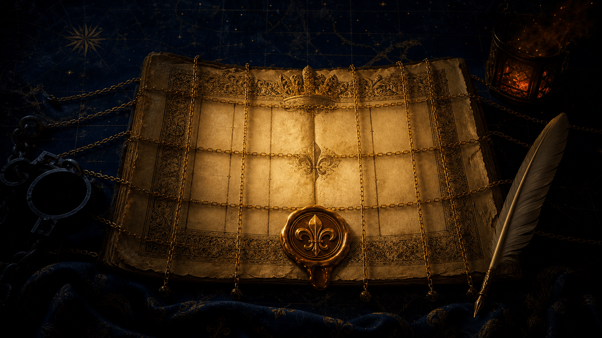
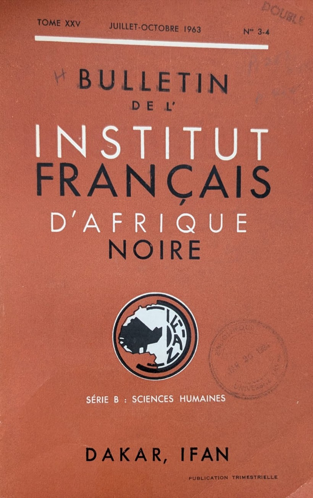
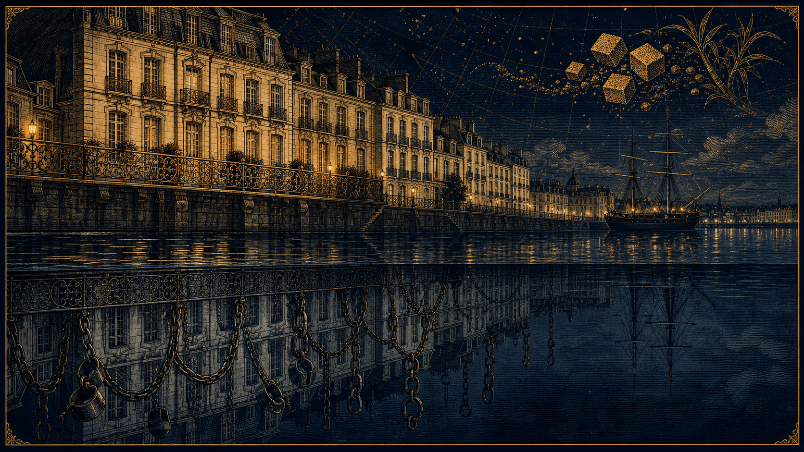

Le commerce triangulaire, le Code Noir, le bulletin de l'IFAN, la route de l'horreur, la résistance et la fracture napoléonienne — vu depuis Nantes, premier port négrier de France.
« Nul ne serait tenu en esclavage ni en servitude. L'esclavage et la traite des esclaves sont interdits sous toutes leurs formes. »
Comment le monde moderne est né d'un crime contre l'humanité.
Ce dossier reprend mot pour mot les trois parties du live consacré à l'esclavage triangulaire : l'immense récit de la traite vu depuis Nantes, la synthèse de ses mécanismes, puis la fracture napoléonienne. Un voyage de mémoire, pour aimer une ville et un pays sans détourner le regard de leur passé.
Le Code Noir transforme l'être humain en « bien meuble ».
Nantes arme ses premiers navires négriers et devient « l'Or Blanc ».
La révolte de Saint-Domingue : la seule à fonder un État libre, Haïti.
Abolition, rétablissement par Napoléon, puis abolition définitive.
Objectifs pédagogiques
Comprendre une machine économique qui a broyé des millions de vies pour un morceau de sucre.
Comprendre
La logique du commerce triangulaire, le rôle de l'État et des lois, et l'ancrage de la traite dans la prospérité de Nantes.
Décentrer
Regarder depuis l'Afrique grâce au bulletin de l'IFAN : des sociétés organisées, une économie de prédation forcée, pas un mythe de « terre sauvage ».
Se souvenir
Redonner leur humanité aux « pièces d'Inde » : la résistance, les femmes, et le fil qui relie 1685 à l'esclavage moderne de 2026.
Repères · interactif
De l'édit de 1685 à la loi Taubira (2001)
Cliquez (ou survolez) une date. La bande marque les périodes où l'esclavage est légal aux colonies — et les deux brèches : l'abolition de 1794, puis l'abolition définitive de 1848.
Esclavage légal aux coloniesAboliRésistance & mémoire
Sources : Fondation pour la mémoire de l'esclavage · Légifrance. Appareil critique →
Partie I · Le grand live
L'esclavage triangulaire
« Imaginez un immense filet jeté sur l'Océan Atlantique, reliant trois continents dans une étreinte tragique. » Le récit complet, depuis Nantes, du système qui a bâti des empires et broyé des millions de vies.
Ouverture du live
« Bienvenue dans cette exploration. »
01
Au micro
« Imaginez un immense filet jeté sur l'Océan Atlantique, reliant trois continents dans une étreinte tragique. Pendant plus de trois siècles, ce filet a déplacé des millions de vies, broyé des destins et bâti des empires. Aujourd'hui, nous allons suivre ce fil invisible pour comprendre comment le monde moderne est né d'un système que l'humanité a fini par nommer "Crime contre l'humanité".
Imaginez qu'ici, sous nos pieds, 1 717 navires sont partis pour ne jamais revenir avec la même cargaison. C'est le point de départ de notre live. Bienvenue dans cette exploration du commerce triangulaire. »
La méthode
« Pour cette préparation, nous nous sommes appuyés sur les travaux de recherche du Musée d'histoire de Nantes et sur les données récentes de l'exposition Expression(s) décoloniale(s) de 2026, tout en croisant ces sources avec les bases de données internationales comme SlaveVoyages. »
À l'époque, les salons parisiens et nantais s'arrachent le sucre pour le café. C'est le signe extérieur de richesse." Ymir (photo sucre) peut faire un geste de la main pour soupeser (sucre-vie humaine).
Mais pour obtenir ce morceau, il faut des plantations à Saint-Domingue, le Code Noir pour briser les corps, et les navires qui partent du Quai de la Fosse. Un seul morceau de sucre représentait des journées de travail forcé sous un soleil de plomb. (Lalie)
Ce sucre fond dans votre café en 10 secondes, mais il a fallu des siècles de combat et des millions de vies pour que l'on reconnaisse enfin l'esclavage comme un crime contre l'humanité.
Sommaire
L'Esclavage et le Commerce Triangulaire.
02
I. Introduction et Définitions
Présentation du commerce triangulaire : Un système global reliant trois continents pendant plus de trois siècles.
Définition historique (Le Code Noir) : La transformation de l'être humain en "bien meuble", entraînant dépossession et déshumanisation.
L'esclavage moderne en 2026 : Persistance sous forme de travail forcé (50 millions de personnes) et de dettes.
II. La Genèse et la Logique du Système
La rencontre de trois besoins : Le capital européen, les terres des Amériques (sucre, tabac, café) et la main-d'œuvre africaine.
La logique du profit : L'investissement le plus rentable de l'époque et le passage à une consommation de masse.
Complicité politique : Le rôle des États européens dans l'encouragement du commerce par les lois.
III. Le Cadre Juridique : Le Code Noir (1685)
Origine et but : Rédigé par Colbert sous Louis XIV pour régir la vie des esclaves et protéger l'investissement des colons.
Les piliers du Code : L'article 44 (l'esclave défini comme un objet mobilier) ; l'effacement culturel — baptême catholique obligatoire (Article 2) ; l'esclavage héréditaire — le statut de l'enfant suit celui de la mère (Article 12).
La légalisation de la violence : Punitions pour fuite (marronnage) et droit de battre les esclaves (Articles 38, 42).
Sources juridiques : Influences du droit romain, du modèle ibérique et de la Coutume de Paris.
IV. L'Afrique : Réalités et Déstabilisation (Source IFAN)
L'apport scientifique du bulletin de l'IFAN (Dakar, 1963) : Briser le mythe d'une Afrique "sauvage" en documentant des sociétés organisées.
L'économie de prédation : Comment la demande européenne et l'échange contre des armes ont militarisé et déstabilisé les royaumes africains.
La valeur marchande : L'unité de mesure "Pièce d'Inde" et le troc de vies humaines contre des marchandises (fusils, textiles).
La complicité des élites locales : Analyse des structures politiques et des enjeux de survie des chefs locaux.
V. Nantes : Capitale de la Traite Négrière
L'ascension d'un port : Comment un choix politique et économique a transformé Nantes en premier port négrier de France.
Les familles d'armateurs : Le rôle des Walsh, Montaudouin et Deurbroucq dans le lobbying à Versailles.
L'urbanisme de l'Or Blanc : La construction de l'Île Feydeau, du Quai de la Fosse et des hôtels particuliers grâce aux profits de la traite.
L'industrie régionale : Textiles (Indiennes), raffinage du sucre et fabrication d'outils de contention.
VI. Le Calvaire et la Résistance des Esclaves
La Route de l'Horreur : Les conditions atroces de la traversée (Middle Passage) et l'entassement sur les navires.
La vie en plantation : Travail épuisant dans les moulins à sucre et espérance de vie réduite (5 à 7 ans).
Le rôle du commandeur : Un système de division pour maintenir l'ordre.
Les formes de résistance : Quotidienne (sabotages, travail lent, empoisonnements) ; Spirituelle (maintien des cultes africains et naissance du Vaudou) ; Le Marronnage (la fuite et la création de villages libres).
Le destin spécifique des femmes : Double exploitation (travail et violences sexuelles) et figures de proue comme la Mulete Solitude.
VII. Conclusion et Mémoire
La fin du système : Rôle des révoltes d'esclaves (Saint-Domingue, 1791) et abolition définitive en 1848.
Héritage et réflexion personnelle : Regarder le passé de Nantes en face pour mieux comprendre les enjeux de dignité humaine aujourd'hui.
Réalisé parLalie & Ymir
Introduction & définitions
L'homme transformé en « bien meuble ».
03
1. Définir l'Esclavage : Une dépossession totale
L'esclavage, au sens historique du terme (le "Code Noir" en France), c'est la transformation d'un être humain en "bien meuble".
La dépossession : L'esclave n'appartient plus à lui-même. Il n'a plus de nom (celui du maître), plus de famille (ses enfants appartiennent au maître), plus de liberté de mouvement.
La déshumanisation : Pour justifier ce système, on a inventé des théories racistes prétendant que certains peuples étaient "inférieurs".
Le parallèle avec aujourd'hui : L'esclavage moderne
Même si l'esclavage "légal" n'existe plus, l'esclavage réel persiste sous d'autres formes :
Le travail forcé : On estime à près de 50 millions le nombre de personnes vivant dans l'esclavage moderne (travail forcé dans les mines, l'industrie textile, ou l'agriculture intensive).
La dette : Des familles entières sont liées à un employeur pour rembourser une dette qui ne s'éteint jamais.
Le point commun : Hier comme aujourd'hui, c'est l'exploitation de la vulnérabilité extrême pour un profit maximum.
2. Les débuts du Commerce Triangulaire
Le système ne s'est pas fait en un jour. Il est né d'une rencontre brutale entre trois besoins :
Le besoin de l'Europe (Le capital) : Après la "découverte" des Amériques, l'Europe veut exploiter ces terres immenses. Mais elle manque de bras (les populations autochtones ont été décimées par les maladies et les guerres).
Le besoin des Amériques (La terre) : Le sol est riche, idéal pour le sucre, le tabac et le café. Ces produits deviennent des drogues douces dont toute l'Europe raffole.
La réponse en Afrique (La main-d'œuvre) : L'Afrique devient le réservoir de force humaine.
3. Les "Pourquoi" : Une machine économique
Pourquoi ce système a-t-il été si puissant et si long ?
Le Profit pur : C'était l'investissement le plus rentable de l'époque. Un navire qui réussissait son "triangle" pouvait enrichir son armateur pour des générations.
La consommation de masse : Le sucre est passé d'un produit de luxe à un produit quotidien. Pour maintenir des prix bas, il fallait une main-d'œuvre gratuite.
La complicité politique : Les États européens (France, Angleterre, Portugal) ont encouragé ce commerce par des lois pour affirmer leur puissance mondiale.
Le lien avec aujourd'hui
On pense souvent que l'esclavage est une vieille histoire, mais quand on regarde nos téléphones ou nos vêtements aujourd'hui, on réalise que la logique de l'exploitation pour le confort de quelques-uns n'a pas totalement disparu."
Le cadre juridique (1685)
Le Code Noir : l'homme devenu « chose ».
04
Imaginé par Colbert sous Louis XIV en 1685, ce recueil d'articles est l'un des textes les plus sombres de l'histoire de France. Il a pour but de régir la vie des esclaves dans les colonies.

L'édit de 1685 — la loi du Roi qui rend l'horreur légale
Le Code Noir n'est pas là pour protéger l'esclave, mais pour protéger l'investissement de l'armateur et du colon. Voici ses piliers principaux :
1. Le Statut Juridique : Le "Bien Meuble" (Article 44)
C'est l'article le plus terrible. L'esclave est déclaré "meuble".
Cela signifie qu'il peut être vendu, acheté, échangé ou saisi par la justice, exactement comme une table, un mouton ou un sac de sucre.
Il n'a aucune personnalité juridique : il ne peut pas témoigner en justice, ne peut rien posséder en propre, et ses enfants appartiennent d'office au maître de sa mère.
2. Le Contrôle de la Vie Quotidienne
Religion : L'édit impose le baptême catholique obligatoire. C'est une manière d'effacer l'identité culturelle et religieuse africaine (dont parle ton livre de l'IFAN).
Mariage : Un esclave ne peut se marier qu'avec l'autorisation de son maître.
Rassemblements : Interdiction stricte de se réunir, même pour des mariages ou des fêtes, de peur que les esclaves n'organisent une révolte.
3. La Discipline et les Supplices
Le Code Noir encadre la violence pour éviter que les maîtres ne tuent "inutilement" leur main-d'œuvre, mais il légalise la torture :
La fuite (Le Marronnage) : Si un esclave s'enfuit pendant un mois, on lui coupe les oreilles et on le marque d'une fleur de lys au fer rouge. À la deuxième tentative, on lui coupe le jarret (le tendon d'Achille). À la troisième, c'est la mort.
L'obéissance : Le maître a le droit de "chaîner et battre de verges" ses esclaves.
Pourquoi en parler ?
Il y a un paradoxe fascinant et terrible à Nantes :
Les armateurs nantais étaient souvent des gens très éduqués, des "humanistes" qui lisaient les philosophes des Lumières.
Pourtant, ils appliquaient le Code Noir sans sourciller car c'était la Loi du Roi.
Le parallèle avec aujourd'hui
"Le Code Noir rendait l'horreur légale. Est-ce que, parce qu'une chose est légale, elle est forcément morale ?".
Les Articles Clés du Code Noir
Voici quelques articles originaux du Code Noir de 1685 produira un effet de choc garanti. C'est le moment où l'histoire devient réelle et brutale pour ton audience. Voici les 5 articles les plus emblématiques à citer :
Article 44 : L'esclave est un objet
"Déclarons les esclaves être meubles et comme tels entrer dans la communauté..."
Le décodage pour ton live : C'est le fondement de tout. Un esclave n'est pas une personne, c'est un "meuble". On peut l'hériter comme une armoire ou le vendre comme un sac de blé. À Nantes, les inventaires après décès des riches armateurs listaient les esclaves entre les meubles du salon et le bétail.
Article 2 : L'effacement culturel
"Tous les esclaves qui seront dans nos îles seront baptisés et instruits dans la religion catholique, apostolique et romaine."
Le décodage : On arrache aux captifs leurs croyances africaines (celles dont parle le livre de l'IFAN) pour leur imposer la religion du maître. C'est une forme de contrôle mental.
Article 12 : L'esclavage héréditaire
"Les enfants qui naîtront des mariages entre esclaves seront esclaves et appartiendront aux maîtres des femmes esclaves."
Le décodage : L'esclavage est un piège sans fin. Si tu nais d'une mère esclave, tu es esclave dès ton premier cri. C'est une "production" de main-d'œuvre gratuite pour le futur.
Article 38 : La punition de la fuite (Le Marronnage)
"L'esclave fugitif qui aura été en fuite pendant un mois [...] aura les oreilles coupées et sera marqué d'une fleur de lys sur une épaule ; s'il récidive [...] il aura le jarret coupé et sera marqué d'une fleur de lys sur l'autre épaule ; et la troisième fois, il sera puni de mort."
Le décodage : Le corps de l'esclave est marqué comme celui d'un animal. On le mutile pour qu'il ne puisse plus courir. La fleur de lys (symbole du Roi) rappelle que c'est l'État français qui cautionne cette torture.
Article 42 : La "retenue" du maître
"Pourront seulement les maîtres, lorsqu'ils croiront que leurs esclaves l'auront mérité, les faire enchaîner et les faire battre de verges ou de cordes."
Le décodage : Le maître est juge et bourreau sur sa plantation. La violence est quotidienne et légale.
Les liens
Le lien avec Nantes : "Pendant que ces lois étaient écrites à Versailles, à Nantes, on construisait les bateaux pour aller chercher ces 'meubles' en Afrique."
Le lien avec l'IFAN : "Le livre de l'IFAN nous montre que ces hommes et femmes avaient une culture, des rois, des systèmes de justice... que le Code Noir a voulu nier totalement."
"Le Code Noir n'est pas tombé du ciel. Ses rédacteurs sont allés chercher dans les poubelles de l'histoire, notamment dans le droit romain vieux de 15 siècles, pour trouver des arguments légaux permettant de traiter un homme comme une armoire. Ce n'est pas une invention, c'est un recyclage de la barbarie pour servir l'économie sucrière de Nantes."
D'où vient le Code Noir ?
Le Code Noir n'est pas une "copie" mot pour mot d'un livre préexistant, mais il s'inspire de plusieurs sources anciennes. Voici les trois grandes influences qui ont permis à Colbert et ses juristes de rédiger ce texte en 1685 :
1. Le Droit Romain (Le "Corpus Iuris Civilis")
C'est la source principale. Les juristes de Louis XIV ont puisé dans le droit de l'Empire romain, vieux de plus de 1000 ans.
Le concept de l'esclave-objet : À Rome, l'esclave était déjà défini comme une Res (une chose).
L'analogie : Le Code Noir a repris cette structure juridique pour l'adapter aux colonies. Ils n'ont pas "inventé" l'idée que l'homme puisse être un meuble, ils l'ont exhumée du droit antique.
2. Les "Siete Partidas" (Le Code Espagnol)
L'Espagne et le Portugal avaient commencé la colonisation et la traite bien avant la France.
Le modèle ibérique : Dès le XIIIe siècle, les Siete Partidas en Espagne régissaient déjà l'esclavage. Les juristes français ont regardé comment les Espagnols géraient leurs esclaves à Cuba ou Hispaniola pour s'en inspirer, notamment sur les questions de baptême et de mariage.
3. La "Coutume de Paris"
Avant 1685, il n'y avait pas de loi unique pour les colonies. Les gouverneurs sur place utilisaient la Coutume de Paris (le droit civil de l'époque en France).
Le problème : La Coutume de Paris ne prévoyait pas l'esclavage, car "le sol de France affranchit celui qui le touche".
La solution : Le Code Noir a été écrit pour "légaliser" aux Antilles ce qui était illégal en métropole. C'est un texte "sur-mesure" qui mélange des morceaux de droit romain avec les nécessités économiques des planteurs.
Le point de vigilance (La confusion possible)
Il arrive que certaines personnes affirment que le Code Noir a été copié sur des textes religieux ou d'autres législations plus anciennes de l'Ancien Testament.
La réalité : S'il y a des points communs (comme la gestion de la fuite ou du vol), le Code Noir est avant tout un outil technocratique et économique. Il a été rédigé par des bureaucrates (Colbert et son fils Seignelay) pour maximiser la production de sucre.
L'envers du décor
L'État, le navire-prison, l'Afrique & l'idéologie.
05
"L'envers du décor"
"D'abord, l'argent et l'État" (Les Compagnies).
"Ensuite, l'idéologie" (Comment on se donne bonne conscience).
"La réalité humaine en Afrique" (Grâce au livre de l'IFAN).
"Et enfin, l'horreur du transport" (La vie à bord).
1. Les Compagnies de Commerce : L'État comme "Cerveau"
Le commerce triangulaire n'était pas une initiative de petits marins isolés. C'était une stratégie d'État.
Colbert et la Compagnie des Indes Occidentales (1664) : Louis XIV et son ministre voulaient briser le monopole des Hollandais. Ils ont créé des méga-entreprises avec des privilèges fiscaux énormes.
Le rôle de Nantes : Au début, l'État contrôlait tout. Mais plus tard, il a ouvert le commerce aux "particuliers". C'est là que les grandes familles nantaises (les armateurs) ont pris le relais et ont fait exploser les chiffres.
L'idée forte : C'était le "capitalisme de monopole". L'État donnait le droit de commercer, et les ports comme Nantes fournissaient les navires.
2. La vie à bord : Le navire-prison
Pour ton live, il faut décrire l'horreur technique de la traversée (le Middle Passage).
L'optimisation de l'espace : Les captifs étaient rangés comme des "cuillères". On séparait les hommes (enchaînés deux par deux) des femmes et des enfants.
La mortalité : Entre 10 % et 20 % des captifs mouraient pendant le voyage (dysenterie, scorbut, suicide). Pour l'armateur nantais, c'était une "perte de marchandise" calculée dans ses frais.
La révolte : Elle était constante. Les navires étaient équipés de "barricados" (murs en bois avec des canons chargés à la mitraille tournés vers les captifs) pour protéger l'équipage en cas d'insurrection.
L'entassement · interactif
Le plan du Brookes (1788)
Le diagramme produit par les abolitionnistes pour révéler l'entassement « en cuillère ». Changez l'espace alloué par personne — et voyez la densité changer.
Représentation abstraite et respectueuse, d'après le célèbre plan du Brookes (1788). Ce diagramme documentait 454 captifs sur le pont inférieur réglementaire (jusqu'à 609 auparavant), sur plusieurs niveaux. Le live évoque « 150 cm » ; la mesure de référence du plan est plutôt 1,83 m × 41 cm par homme adulte.
3. Le livre de l'IFAN : La réalité de l'Afrique
C'est ici que ta source devient précieuse. Le bulletin de l'IFAN (Dakar) permet de briser le mythe d'une Afrique sauvage.
Des sociétés organisées : Le livre explique que les royaumes (comme le Dahomey ou les empires Wolofs) avaient leurs propres lois, leur diplomatie et leur artisanat.
L'impact de la traite : La demande européenne en esclaves a militarisé l'Afrique. Pour ne pas être capturés, certains royaumes ont dû capturer leurs voisins. Le livre de l'IFAN documente comment cela a déstabilisé des civilisations entières pendant des siècles.
Lien avec Nantes : Les navires nantais allaient souvent vers la côte du Bénin (Ouidah) ou le Sénégal (Gorée).
4. L'Idéologie : Justifier l'injustifiable
Comment des chrétiens, des "humanistes" du XVIIIe siècle, pouvaient-ils faire cela ?
La Malédiction (Canaan) de Cham : Une interprétation détournée de la Bible prétendant que les descendants de Cham (associés aux Africains) étaient condamnés à l'esclavage.
La "Mission Civilisatrice" : On prétendait que l'esclavage était une chance pour les captifs car cela leur permettait de devenir chrétiens et de "sortir de la barbarie".
Le Racisme "Scientifique" : On a commencé à classer les humains par "races" pour prouver que la "race blanche" était faite pour diriger et les autres pour servir.
L'Afrique : réalités & déstabilisation
Le bulletin de l'IFAN : regarder depuis Dakar.
06

Pièce d'archive · la couverture montrée pendant le live
Bulletin de l'IFAN — Dakar · Tome XXV, n°3-4, juillet-octobre 1963 · Série B : Sciences Humaines.
Institut Français d'Afrique Noire — fondé en 1936, ouvert en 1938 par Théodore Monod ; devenu « Institut fondamental d'Afrique noire » en 1966, puis « IFAN Cheikh Anta Diop » en 1986. Ce numéro contient notamment Y. Wane, « État actuel de la documentation au sujet des Toucouleurs » (p. 457-477) — une société ouest-africaine documentée. Notices : BnF · IFAN-UCAD.
Le Bulletin de l'Institut Français d'Afrique Noire (IFAN), série B (Sciences Humaines), est un outil puissant pour ce live car il apporte une caution scientifique et "décentre" le regard : on ne regarde plus seulement depuis le port de Nantes, on regarde depuis l'Afrique.
Zoom sur la Source : Le Bulletin de l'IFAN (Dakar)
1. Qu'est-ce que l'IFAN ?
Cet institut, basé à Dakar (Sénégal), a été le cœur de la recherche en sciences humaines en Afrique de l'Ouest.
L'intérêt : Ce ne sont pas des récits de capitaines négriers nantais, mais des études d'historiens et d'ethnologues sur les sociétés africaines elles-mêmes.
La Série B : Elle est dédiée à l'anthropologie, à l'histoire et à la sociologie.
2. Ce que le livre nous apprend sur l'Afrique de la Traite
On peut utiliser ce livre pour briser trois idées reçues :
Idée reçue 1 : "L'Afrique était une terre sauvage sans lois." La réalité (via l'IFAN) : Le livre documente des structures politiques complexes (Empires Wolof, Royaume du Dahomey, États Fouta-Djallon). Ces États avaient des systèmes de castes, de justice et d'impôts bien avant l'arrivée des Européens.
Idée reçue 2 : "Les Africains ont vendu les leurs par simple cruauté." La réalité (via l'IFAN) : Le livre montre comment la demande européenne en armes à feu a créé un cercle vicieux. Pour protéger son royaume contre un voisin armé par les Européens, il fallait soi-même obtenir des fusils... et la seule "monnaie" acceptée par les navires nantais était l'être humain. C'était une économie de survie forcée.
Idée reçue 3 : "L'esclavage en Afrique était le même que celui des colonies." La réalité (via l'IFAN) : Le bulletin explique souvent la différence entre la "servitude domestique" (souvent temporaire ou intégrée à la famille) et la "traite transatlantique" (industrielle, raciale et déshumanisante via le Code Noir).
3. Comment utiliser en Live ?
Le "Show and Tell" : On vous montre la couverture. Son aspect académique et ancien donne du poids à nos propos.
La lecture d'un passage : Trouver une page qui mentionne un lieu (ex : Gorée, Ouidah, ou la Côte des Esclaves). "Regardez, ce livre publié à Dakar nous explique que dans cette région, la traite a fait disparaître des villages entiers pour alimenter les ports comme Nantes."
Présentation de l'objet (Le "Unboxing" historique)
Montrer la couverture à la caméra.
Le contexte : Explique que ce numéro date de 1963, soit seulement 3 ans après les indépendances de nombreux pays d'Afrique de l'Ouest. C'est une période où les chercheurs (africains et français) commencent à réécrire l'histoire de l'Afrique non plus du point de vue des colons, mais de manière scientifique.
Le logo de l'IFAN : On y voit une carte de l'Afrique. C'est le symbole de la volonté de centraliser toutes les connaissances (archéologie, ethnologie, histoire) à Dakar.
Pourquoi la "Série B : Sciences Humaines" est cruciale ?
Contrairement à la Série A (sciences naturelles), la Série B parle des hommes, des cultures et de l'économie.
Dans ce volume de 1963, les articles traitent souvent de la démographie et de l'histoire des royaumes.
Nous pouvons dire que : "Ce livre nous prouve que les captifs qui arrivaient à Nantes ne venaient pas de nulle part. Ils venaient de sociétés documentées ici, avec leurs propres structures sociales que la traite a violemment perturbées."
3. Transformer l'horreur en statistiques (L'histoire économique)
À l'époque de la rédaction de ces articles (milieu du XXe siècle), les historiens voulaient comprendre comment le capitalisme moderne s'est construit.
La valeur marchande : Les listes de prix que l'on voit servaient à prouver que l'esclavage n'était pas un "accident", mais une gestion comptable froide.
Le "Pièce d'Inde" : C'était l'unité de mesure. Un homme jeune et vigoureux valait "1 Pièce d'Inde". Les enfants ou les personnes âgées valaient des fractions (1/2 ou 2/3 de "pièce").
Documenter le "Troc" (Ce qu'on échangeait contre des vies)
Le livre liste souvent ce qu'un navire nantais devait donner pour obtenir un captif. On y voit que la valeur d'une vie humaine était traduite en :
Marchandises : Tant de barils de poudre, tant de fusils, tant de mètres de textile ("Indiennes"), ou des cauris (coquillages servant de monnaie).
L'intérêt pour ton live : Montrer ces pages prouve que pour les armateurs de Nantes, acheter un homme était identique à acheter un sac de café. C'est la preuve ultime de la déshumanisation prévue par le Code Noir.
Analyser l'impact sur les sociétés africaines
L'IFAN n'a pas publié ces prix pour "vendre" des gens, mais pour montrer comment l'économie européenne a corrompu les économies africaines.
En fixant des prix élevés sur les êtres humains et en payant avec des armes, les Européens ont forcé les royaumes africains à se faire la guerre pour capturer des voisins et les vendre.
Sachez que ce que l'on vous montre avec cette une page de ce bulletin de l'IFAN. ne sont pas des prix de marchandises ordinaires. Ce sont les prix de femmes, d'hommes et d'enfants."
La comparaison : "Regardez : ici, un homme est évalué à 15 fusils ou 30 pièces de tissu. C'est l'application directe de l'Article 44 du Code Noir que nous avons vu : l'homme est un meuble, un objet avec une étiquette de prix."
Ces pages peuvent être choquantes. Précisons bien que ces livres sont des outils de mémoire : on étudie ces prix aujourd'hui non pas pour valider ce commerce, mais pour mesurer l'ampleur du crime et ne jamais l'oublier.
Le lien avec les produits du quotidien (L'impact invisible)
Beaucoup de gens pensent que l'esclavage est une histoire lointaine. Montrons-leur que c'est dans leur cuisine.
L'idée : Préparer un morceau de sucre, un paquet de café ou du coton.
Ce qu'il faut dire : "À l'époque, Nantes était la capitale européenne du raffinage du sucre. On l'appelait 'l'or blanc'. Chaque morceau de sucre consommé à Paris ou à Versailles passait par les quais de Nantes et était souillé par le sang des captifs décrits dans le livre de l'IFAN."
Lien avec aujourd'hui : Posons-nous la question : "Aujourd'hui, quand on achète un vêtement à très bas prix, est-ce qu'on ne reproduit pas un peu ce schéma ?"
Ceci sans être moralisateur !
Le calvaire
La route de l'horreur.
07
Le passage du milieu — l'immensité de l'océan, en mémoire des disparus
Le triangle · interactif
Trois continents, trois jambes, un seul profit
Cliquez une jambe du triangle (ou une carte) pour voir ce qui circulait — et à quel prix humain.
Carte schématique (les comptoirs et destinations sont réels, la géométrie est simplifiée). Source : SlaveVoyages · Musée d'histoire de Nantes.
1. La Route : Une navigation calculée
Le commerce triangulaire n'est pas une ligne droite, c'est une exploitation des vents et des courants.
Le départ : On quitte l'Europe (Nantes, Bordeaux, Liverpool) en descendant vers le Sud pour attraper les alizés.
La traversée du milieu (Middle Passage) : Le trajet entre l'Afrique et les Amériques. C'est la partie la plus meurtrière. Elle dure entre 40 et 80 jours selon les vents.
Le retour : On remonte vers le Nord (Floride) pour attraper les courants de l'Atlantique Nord qui ramènent les navires vers l'Europe.
2. Les Ports d'Afrique : Les "Entrepôts de Vies"
Grâce à au livre de l'IFAN, on peut citer des noms précis. Les navires nantais ne s'arrêtaient pas n'importe où :
Gorée (Sénégal) : Un point de départ majeur.
Ouidah (Bénin) : Surnommée la "Côte des Esclaves". C'est là que les courtiers locaux échangeaient les captifs contre les marchandises nantaises.
Luanda (Angola) : Pour les trajets plus longs.
Le détail choc : Les captifs attendaient parfois des mois dans des barracons (enclos sur la plage) ou des vents des forts avant que le navire ne soit "plein".
3. Les Conditions de vie à bord (L'enfer flottant)
C'est ici que l'on peut faire le lien avec le Code Noir (qui ne prévoyait rien pour le confort, seulement pour la survie minimale du "meuble").
L'entassement : Les hommes étaient couchés sur le côté pour gagner de la place. L'air était irrespirable (chaleur, odeurs, maladies comme la dysenterie).
La "danse" forcée : Pour éviter que les muscles ne s'atrophient et que la "marchandise" ne perde de sa valeur, on forçait les esclaves à monter sur le pont pour sauter ou danser sous la menace du fouet.
La nourriture : Des bouillies de fèves ou de riz, souvent infectées.
4. Les Ports d'arrivée : "La mise aux enchères"
Les navires nantais visaient principalement les Antilles françaises :
Saint-Domingue (Haïti) : La "Perle des Antilles". C'était la destination numéro 1 pour Nantes. On y produisait des quantités astronomiques de sucre.
La Martinique et la Guadeloupe : Les autres points de chute.
L'arrivée : À peine descendus du bateau, les esclaves étaient "préparés" (on huilait leur peau pour cacher les cicatrices et les maladies) pour être vendus aux enchères sur la place publique.
5. Le Destin des Esclaves
Une fois vendus, c'est le début d'une vie de travail forcé jusqu'à la mort.
Le "Grand Travail" : La coupe de la canne à sucre sous un soleil de plomb. C'est un travail épuisant et dangereux (les moulins à sucre broyaient souvent les membres des travailleurs).
L'espérance de vie : À Saint-Domingue, un esclave qui arrivait d'Afrique avait une espérance de vie de seulement 5 à 7 ans à cause de la dureté du travail.
Le Marronnage : Certains s'enfuyaient dans les montagnes (les "Nègres Marrons"). C'est là qu'on appliquait l'Article 38 du Code Noir (oreilles coupées, marquage au fer).
"Pendant que ces hommes et ces femmes mouraient d'épuisement à Saint-Domingue pour produire du sucre, les armateurs à Nantes surveillaient l'horizon. Chaque mort en mer était une perte financière, mais chaque sac de sucre qui arrivait au Quai de la Fosse était un pas de plus vers la construction de ces palais que l'on va vous montrer plus tard."
C'est le moment d'aborder la partie la plus sombre de la "chaîne logistique". Il est crucial de montrer que la capture n'était pas un événement isolé, mais une déstabilisation organisée de tout un continent. Le livre de l'IFAN (Tome XXV) est précieux ici, car il analyse justement comment les structures sociales africaines ont été percutées.
1. Les mécanismes de capture : Comment devenait-on captif ?
Contrairement à l'imagerie populaire, les marins nantais descendaient rarement eux-mêmes chasser les gens dans la brousse (trop risqué pour eux à cause des maladies et de la résistance locale). Ils utilisaient des leviers indirects :
Les Guerres de Traite : C'était la source principale. Les Européens fournissaient des fusils à un royaume A. Pour ne pas être détruit, le royaume B devait aussi avoir des fusils. Pour payer ces fusils aux Nantais, il fallait livrer des prisonniers de guerre. C'était un cercle vicieux.
Les Raids (Razzias) : Des bandes armées attaquaient les villages isolés, souvent la nuit, pour capturer les jeunes hommes et femmes les plus vigoureux.
Le Kidnapping : Des enlèvements individuels en bord de forêt ou près des points d'eau.
La Justice détournée : Sous la pression de la demande européenne, certains délits mineurs (dettes, adultères, vols) commençaient à être punis par la vente en esclavage.
A. La Traversée : Le "Passage du Milieu"
C'est la phase la plus traumatisante. Le navire n'est plus un moyen de transport, c'est une machine à broyer l'humain.
L'Espace : Dans le livre de l'IFAN, on comprend que la rentabilité était la seule règle. Un navire de 30 mètres pouvait transporter jusqu'à 400 ou 500 personnes. Les captifs disposaient d'un espace d'environ 150 cm de long sur 40 cm de large.
L'Hygiène : Sans accès à l'eau propre, les maladies comme la dysenterie (appelée "le flux de sang") se propageaient à une vitesse folle. Le taux de mortalité moyen était de 15 %, mais pouvait monter à 50 % en cas d'épidémie.
La Révolte du désespoir : Beaucoup de captifs préféraient la mort. On installait des filets autour du navire pour empêcher ceux qui montaient sur le pont de se jeter à la mer. Ceux qui faisaient une grève de la faim étaient nourris de force avec un instrument en fer appelé le speculum oris.
2. La Marche vers la Côte : Le premier calvaire
Une fois capturés, les futurs esclaves devaient rejoindre les ports de départ (ceux cités dans l'IFAN : Ouidah, Gorée, etc.).
Les "Cofles" : On attachait les captifs les uns aux autres par le cou avec des fourches en bois ou des chaînes. Ils marchaient parfois des centaines de kilomètres sous un soleil de plomb.
Le Tri : Ceux qui tombaient d'épuisement étaient abandonnés ou tués sur place car ils n'avaient plus de "valeur marchande". C'est la première étape de la déshumanisation : on ne voit plus l'humain, on voit la "pièce d'Inde" (l'unité de mesure dont on parlait).
3. Les Forts et les "Barracons" (L'attente)
Arrivés sur la côte, les captifs ne montaient pas tout de suite sur les navires nantais.
Les Prisons : Ils étaient enfermés dans des donjons (comme au Fort d'Elmina ou à Gorée) ou dans des enclos sur la plage appelés barracons.
L'Examen médical : Les chirurgiens des navires nantais inspectaient les corps : on vérifiait les dents, les yeux, la musculature. On marquait ensuite le corps au fer rouge (le "marquage") avec le sigle de la compagnie ou de l'armateur pour prouver la propriété. C'est l'application physique de l'Article 44 du Code Noir avant même le départ.
4. Le Destin : Pourquoi eux ? (La sélection)
Les acheteurs nantais cherchaient des profils spécifiques pour les plantations de Saint-Domingue :
Les "Nègres de jardin" : Pour le travail de force dans la canne à sucre.
Les artisans : Parfois, ils cherchaient des forgerons ou des menuisiers dont les compétences étaient déjà reconnues en Afrique (compétences souvent détaillées dans les études de l'IFAN).
Les femmes : Utilisées pour le travail domestique mais aussi pour la "reproduction" de la main-d'œuvre (l'Article 12 du Code Noir stipulant que l'enfant suit la condition de la mère).
A. L'Arrivée aux Antilles : La "Préparation"
Avant d'être vendus dans les ports comme Port-au-Prince ou Cap-Français, les esclaves subissaient un traitement pour augmenter leur "prix" (ceux que tu as vus dans ton livre).
Le camouflage : On rasait les cheveux pour cacher les poux, on frottait la peau avec de l'huile de palme pour faire briller les muscles, et on utilisait de la poudre pour masquer les plaies et les maladies de peau.
La marque finale : C'est souvent là qu'on appliquait le fer rouge une dernière fois pour marquer l'esclave du sceau de son nouveau propriétaire (le colon).
B. Le Travail en Plantation : Une mort programmée
L'esclave ne devenait pas seulement un travailleur, il devenait un outil de production.
Le cycle de la canne : C'est le travail le plus dur. Il fallait défricher, planter, puis couper la canne sous un soleil de plomb. Mais le pire était le moulin : le broyage de la canne se faisait jour et nuit. Si un esclave, épuisé, se faisait prendre la main dans l'engrenage, on avait toujours une hache à côté pour trancher le bras immédiatement et ne pas arrêter la machine.
L'alimentation : Le Code Noir (Article 22) obligeait le maître à fournir une certaine quantité de nourriture (farine de manioc, poisson salé), mais dans la réalité, beaucoup de maîtres préféraient laisser les esclaves mourir de faim et en racheter de nouveaux, car cela coûtait moins cher que de les nourrir correctement.
C. Les pourquoi : Pourquoi cette cruauté était-elle "normale" ?
La déshumanisation par le droit : Le Code Noir permettait de dormir tranquille. Si l'esclave est un "meuble", alors le battre n'est pas plus grave que de casser une chaise.
L'économie monde : L'Europe était "accro" au sucre. Cette demande mondiale rendait l'esclavage indispensable aux yeux des puissances de l'époque.
"Ce livre nous montre des chiffres de population en Afrique. On voit des régions qui se vident de leurs hommes jeunes. C'est l'explication de ce que je vous raconte : on a déporté la force vive de tout un continent pour faire tourner les moulins à sucre des Antilles."
Les dirigeants d'Afrique pouvaient-ils être complices ?
Une question subsiste, les dirigeants des pays d'Afrique pouvaient-ils être complices ? C'est une question cruciale et souvent sensible, mais la réponse historique est oui, il y avait une complicité active de certaines élites et dirigeants africains, mais il faut comprendre pourquoi et comment pour ne pas faire de raccourcis. Le livre de l'IFAN (1963) est justement là pour analyser ces structures politiques. Voici les faits pour ton live :
1. Un partenariat commercial, pas une invasion
Au début, les Européens (dont les Nantais) n'avaient pas les moyens militaires d'envahir l'Afrique. Ils restaient sur les côtes.
Le deal : Les rois et chefs locaux (comme ceux du Dahomey, de l'Ashanti ou du Kongo) contrôlaient l'accès à l'intérieur des terres.
Le profit : En échange des captifs, ces dirigeants recevaient des marchandises de prestige : tissus de luxe, alcool, coraux, mais surtout des armes à feu.
2. Le piège du fusil (Le cercle vicieux)
Si un roi africain refusait de vendre des esclaves, il n'avait pas de fusils.
Son voisin, lui, acceptait le deal et obtenait des armes.
Le voisin attaquait alors le premier roi pour capturer son peuple et le vendre.
Résultat : Pour survivre et protéger son propre peuple, chaque dirigeant était poussé à faire la guerre aux autres pour fournir des captifs aux Européens. C'est ce qu'on appelle l'économie de prédation.
3. Qui étaient les captifs ?
Les rois africains ne vendaient pas "leur propre peuple" au sens de leurs sujets directs.
Ils vendaient des prisonniers de guerre, des criminels, des débiteurs ou des membres de tribus rivales capturés lors de raids (razzias).
Pour eux, à l'époque, la notion d' "Afrique" ou de "Fraternité noire" n'existait pas. Ils voyaient les voisins comme des étrangers ou des ennemis, exactement comme les rois européens se faisaient la guerre entre eux.
4. Les résistances oubliées
Il ne faut pas dire que tous étaient complices. Le livre de l'IFAN évoque sans doute des résistances :
Certains dirigeants, comme la Reine Nzinga (en Angola) ou le Roi Almamy du Fouta-Toro, ont essayé d'interdire la traite sur leurs terres ou de détourner le commerce vers d'autres produits.
Mais face à la puissance financière des ports comme Nantes et à la demande mondiale de sucre, ces résistances ont souvent été écrasées par la force ou par des coups d'État financés par les négriers.
"C'était un crime à deux mains. L'Europe (Nantes) fournissait le capital et la demande, et certaines élites africaines fournissaient la 'marchandise'. Mais attention : c'est l'Europe qui a créé ce marché et qui a imposé le fusil comme monnaie d'échange. Sans le sucre des Antilles et l'argent de Nantes, cette complicité n'aurait jamais pu atteindre une échelle industrielle."
"L'histoire n'est jamais toute blanche ou toute noire, c'est une machine économique qui a broyé des millions de gens pour un morceau de sucre."
Briser les chaînes
La résistance & le destin des femmes.
08
Il est important de souligner que des résistances s'organisaient.
1. La Résistance : Briser les chaînes
L'esclavage n'a jamais été accepté. La résistance commençait dès le navire et continuait sur terre.
Le Marronnage (La fuite) : C'est l'acte de s'enfuir de la plantation. Le "Petit Marronnage" : s'absenter quelques jours pour voir de la famille sur une autre plantation ou pour protester contre un mauvais traitement. Le "Grand Marronnage" : s'enfuir définitivement dans les montagnes ou les forêts impénétrables (comme à Saint-Domingue ou en Jamaïque). Les esclaves y créaient de véritables villages libres cachés.
Les Sabotages : C'était la résistance du quotidien. Casser un outil, travailler lentement, ou mettre le feu aux champs de canne à sucre pour ruiner le colon.
Les Révoltes armées : La plus célèbre est celle de Saint-Domingue en 1791, menée par Toussaint Louverture. C'est la seule révolte d'esclaves dans l'histoire qui a mené à la création d'un État libre : Haïti.
N'oublions pas ces femmes qui ont souffert doublement mais qui se sont dressées contre le rétablissement de l'esclavage mais qui existe encore en 2026.....
1. Le destin des femmes : Une double oppression
Dans ton livre de l'IFAN, on voit que les femmes étaient très présentes dans les cargaisons. Leur calvaire était spécifique :
L'exploitation sexuelle : En plus du travail forcé, les femmes subissaient les violences des maîtres et des commandeurs. Le Code Noir tentait d'encadrer cela (en punissant théoriquement les maîtres qui avaient des enfants avec des esclaves), mais dans la réalité, c'était la loi du plus fort.
La "Production" d'esclaves : Le ventre des femmes était considéré comme une usine à main-d'œuvre. Selon l'Article 12 du Code Noir, l'enfant né d'une femme esclave devenait automatiquement la propriété du maître.
Les figures de proue : Parle de femmes comme la Mulete Solitude en Guadeloupe. Elle s'est battue les armes à la main contre le rétablissement de l'esclavage par Napoléon en 1802, alors qu'elle était enceinte. Elle est devenue un symbole de résistance héroïque.
C'est une observation très juste et elle touche au cœur de ce qu'on appelle l'esclavage moderne. Aujourd'hui encore, les femmes et les filles sont statistiquement les premières victimes des formes contemporaines d'esclavage. Faire ce pont entre le Code Noir de 1685 et la réalité de 2026 donne une profondeur incroyable à au sujet. Voici pourquoi et comment les femmes en sont toujours victimes :
1. La vulnérabilité persistante (Le parallaxe historique)
Hier, le Code Noir utilisait le corps des femmes pour "produire" de la main-d'œuvre gratuite (l'enfant suivait le sort de la mère). Aujourd'hui, la logique d'exploitation n'a pas disparu, elle a changé de nom.
Les formes actuelles d'esclavage pour les femmes :
Le travail forcé domestique : C'est "l'esclavage invisible". Des femmes (souvent migrantes) sont enfermées dans des foyers privés, privées de passeport, non payées, et travaillent 15h par jour. C'est le prolongement direct des "servantes" des maisons d'armateurs à Nantes.
L'exploitation sexuelle commerciale : C'est la forme la plus violente. Des réseaux de traite utilisent la menace et la dette pour contraindre des femmes. C'est la marchandisation pure du corps humain, comme au temps des enchères coloniales.
Le mariage forcé : Dans beaucoup de régions du monde, le mariage forcé est considéré par l'ONU comme une forme d'esclavage moderne, car la femme perd toute autonomie et appartient légalement ou socialement à son époux ou à sa belle-famille.
2. Pourquoi les femmes en particulier ?
C'est une question de structure sociale (le patriarcat) qui rejoint l'économie :
La pauvreté féminisée : Les femmes ont souvent moins accès à la propriété ou à l'éducation. Les trafiquants utilisent cette précarité pour leur promettre des emplois de "serveuse" ou de "nounou" en Europe, avant de les piéger.
Le silence : Comme au XVIIIe siècle, la honte et la menace de représailles sur la famille empêchent beaucoup de victimes de parler.
Avec le bulletin de l'IFAN pour montrer que la résistance des femmes ne date pas d'hier.
Dans les sociétés africaines étudiées par l'IFAN, les femmes avaient souvent des rôles de conseillères, de commerçantes ou de guerrières.
Le message : L'esclavage a tenté de briser ce pouvoir féminin. Aujourd'hui, la lutte contre l'esclavage moderne passe d'abord par l'éducation et l'autonomisation des femmes.
Ce qu'il faut retenir
L'esclavage n'est pas mort, il a juste enlevé ses chaînes en fer pour mettre des chaînes invisibles (dettes, menaces, pression sociale).
On nous a souvent appris que l'esclavage s'est arrêté parce que des politiciens l'ont décidé. C'est faux. L'esclavage a reculé parce que les esclaves eux-mêmes ont rendu le système ingérable par leurs révoltes, leur courage et leur refus de mourir en silence. Quand nous verrons les pierres de Nantes tout à l'heure, rappelez-vous que derrière chaque façade, il y avait des hommes et des femmes qui rêvaient de liberté.
On regarde les photos de Nantes, on lit le Code Noir et on se dit 'Quelle horreur, heureusement que c'est fini'. Mais regardez autour de vous. Quand on achète un vêtement fabriqué dans un atelier clandestin à l'autre bout du monde, ou quand on ignore la traite des êtres humains qui se joue parfois dans l'immeuble d'à côté, on est dans la même position que les Nantais du XVIIIe siècle qui buvaient leur café sucré en ignorant la souffrance des femmes dans les plantations.
L'héritage
Les traces invisibles.
09
1. Les mots qui nous restent
"Pacotille" : Explique que c'était la marchandise (perles, miroirs) que les marins nantais emportaient pour leur propre compte. Aujourd'hui, on l'utilise pour dire "de mauvaise qualité".
"Indiennes" : Ce sont les tissus fabriqués à Nantes pour être échangés contre des humains. C'est l'ancêtre de toute l'industrie textile de la région.
2. L'objet "témoin" : Le Sucre ou le Café
un morceau de sucre ou une tasse de café à côté du livre de l'IFAN.
Le message : "On l'appelait 'l'Or Blanc'. Nantes s'est enrichie en raffinant ce sucre. Chaque grain de sucre qui arrivait au Quai de la Fosse au XVIIIe siècle était le résultat direct du travail forcé et des prix que nous lisons dans ce bulletin de Dakar."
Nantes, capitale de la traite
Sur quoi cette ville s'est-elle bâtie ?
10

Le fer des balcons, le fer des chaînes — deux faces d'une même pièce
Aujourd'hui, je vous emmène avec moi dans un voyage très particulier. Vous connaissez sans doute ses machines de l'île, son château, ses beaux immeubles de pierre blanche... Mais est-ce que vous savez vraiment sur quoi cette ville s'est bâtie ?
Si on regarde de près les façades de l'Île Feydeau ou du Quai de la Fosse, les pierres nous racontent une histoire que l'on a longtemps voulu oublier : celle du commerce triangulaire. Nantes n'a pas seulement été un port, elle a été la capitale française de la traite négrière. Près d'un navire sur deux partait d'ici.
Pour comprendre ce système, on ne va pas seulement regarder des photos. On va plonger dans les textes. Nous avons avec nous une source rare : ce bulletin de l'IFAN de Dakar de 1963. À l'intérieur, il y a des chiffres, des prix de vies humaines, des analyses sur les sociétés africaines que Nantes est allée percuter de plein fouet.
Je suis née ici, à Nantes. J'ai grandi dans ces rues, j'ai marché sur ces quais des milliers de fois, j'ai admiré ces façades blanches sans toujours savoir ce qu'elles cachaient vraiment. Nantes, c'est ma ville, j'en suis fière, mais pour bien aimer sa ville, il faut aussi oser regarder son passé en face.
Pendant longtemps, on a parlé du 'commerce de Nantes'. Mais ce commerce, c'était le sang et l'or. C'était le commerce triangulaire. Nantes a été le premier port négrier de France. Près de la moitié des expéditions vers l'Afrique partaient d'ici, de nos quais.
Pour comprendre comment ma ville est devenue cette métropole magnifique, j'ai voulu remonter à la source. C'est pour ça que ce livre : le nous avons le bulletin de l'IFAN de 1963. À l'intérieur, il y a la voix de l'Afrique, il y a des chiffres, des prix... la preuve que derrière chaque balcon en fer forgé de l'île Feydeau, il y avait une réalité humaine que le Code Noir de 1685 avait décidé d'effacer.
Aujourd'hui, en tant que Nantaise, je ne veux plus juste 'voir' ma ville, je veux la 'comprendre'. On va parler ensemble des textes, des captures en Afrique, pour arriver jusqu'aux photos que j'ai prises pour vous dans les rues de Nantes.
"Au tout début, Nantes était une ville de marins comme les autres. Mais vers 1700, Nantes a fait un choix : celui de l'Or Blanc. Ils ont regardé vers l'Océan, ils ont lu les nouvelles lois du Code Noir, et ils ont lancé les premiers navires. C'est à ce moment-là que le destin de ma ville a basculé pour devenir ce qu'elle est aujourd'hui."
Comment une petite ville de province est devenue un géant européen. Nantes n'a pas toujours été un port négrier ; elle l'est devenue par un choix politique et économique très précis à la fin du XVIIe siècle. Il faut remonter au moment où Nantes n'était qu'un port de province et comment, en quelques décennies, elle est devenue le "piston" de l'économie coloniale française. Voici le début de l'histoire,
1. 1685-1700 : Le "Déclic" (Le Code Noir et Colbert)
Avant 1700, Nantes commerce surtout avec l'Europe (sel, vin). Mais le ministre de Louis XIV, Colbert, veut que la France ait son propre sucre pour ne plus l'acheter aux Hollandais.
L'outil : Il rédige le Code Noir en 1685. Ce texte donne un cadre "légal" à l'horreur. Il définit l'esclave comme un "bien meuble".
L'opportunité : Pour les commerçants nantais, c'est le signal. Puisque la loi autorise et que le Roi encourage, ils vont se lancer.
Le premier navire : En 1707, le monopole des grandes compagnies d'État est brisé. Les familles nantaises ont enfin le droit d'armer leurs propres bateaux pour la traite. C'est l'explosion.
2. Pourquoi Nantes et pas un autre port ?
En tant que Nantaise, je sais que la ville est une île (ou l'était). C'est sa force :
La Loire (L'autoroute) : On fait descendre par le fleuve tout ce qu'on va échanger en Afrique : les eaux-de-vie d'Anjou, le bois de construction, et surtout les Indiennes (tissus de coton imprimés à Nantes).
Le savoir-faire : Nantes avait déjà les meilleurs charpentiers de marine et les meilleurs tonneliers.
L'absence de scrupules : Contrairement à d'autres ports plus conservateurs, Nantes accueille des familles d'affaires venues de partout (Irlande, Hollande) qui veulent faire fortune très vite.
3. Le premier "Commerce Triangulaire"
Voici comment se déroulaient les premières expéditions (celles qui ont financé les premiers hôtels particuliers) :
Le départ de Nantes : Le navire part du Quai de la Fosse. Il est rempli de tissus, de fusils et d'alcool.
L'escale en Afrique : C'est là que le livre de l'IFAN intervient. Les Nantais négocient avec les chefs locaux sur la "Côte des Esclaves" (Bénin, Togo actuels). On échange les tissus contre des hommes, des femmes et des enfants.
La traversée (Le passage du milieu) : 2 mois d'enfer. C'est la phase où la "marchandise" meurt le plus.
La vente aux Antilles : On vend les survivants à Saint-Domingue contre du sucre brut, du café et de l'indigo.
Le retour à Nantes : On décharge le sucre, on le raffine dans les usines nantaises, et l'armateur devient multimillionnaire.
4. Les premières "Dynasties"
C'est à ce moment-là que des noms comme Walsh, Montaudouin ou Deurbroucq apparaissent.
Ils ne sont pas encore dans les grands palais de l'Île Feydeau (qui n'existe pas encore sous sa forme actuelle).
Ils vivent dans le "Vieux Nantes" (quartier Bouffay), mais ils commencent à acheter des terres et à planifier la construction de la ville monumentale que je connais.
Je suis née ici, et pendant longtemps, j'ai cru que Nantes était devenue riche grâce au sel ou au vin. Mais quand on remonte au début, vers 1700, on découvre que le vrai moteur de ma ville, ça a été le sucre. Et pour avoir ce sucre, il a fallu appliquer le Code Noir que j'ai ici, et payer les prix que je lis dans le livre de l'IFAN. C'est là que tout a commencé.
Exactement. C'est là que l'on comprend que Nantes n'est pas devenue riche par "accident", mais par un lobbying acharné. Ces familles n'étaient pas juste des marins, c'étaient des politiciens et des stratèges qui murmuraient à l'oreille du pouvoir. Voici comment ces familles nantaises (les Walsh, Montaudouin, Deurbroucq) ont manoeuvré avec Colbert et le Roi pour verrouiller le système :
1. Obtenir le "Privilège" (La fin du monopole)
Au début, seul le Roi, via la Compagnie des Indes, avait le droit de faire la traite.
La manoeuvre : Les commerçants nantais ont harcelé Versailles pour dire : "Laissez-nous faire, nous serons plus efficaces et nous rapporterons plus de taxes au Roi."
Le résultat : En 1716, ils obtiennent la "libéralisation". Nantes devient l'un des rares ports autorisés à faire la traite librement. C'est le coup d'envoi de la fortune colossale de ta ville.
2. Le Code Noir : Un contrat d'assurance pour les riches
On présente souvent le Code Noir (1685) comme un simple texte de loi, mais pour les familles nantaises, c'était un outil de gestion.
Sécuriser l'investissement : Avant ce texte, le statut de l'esclave était flou. Colbert, poussé par les milieux d'affaires, a écrit noir sur blanc que l'esclave est un "bien meuble".
Pourquoi c'était vital pour Nantes ? Parce qu'on ne prête pas d'argent pour acheter des meubles si on n'est pas sûr qu'ils nous appartiennent légalement. Le Code Noir a permis aux banques et aux armateurs de Nantes d'investir sans risque juridique.
3. Les "Cadeaux" et la corruption
Pour garder leurs privilèges, ces familles savaient recevoir.
Le lobbying à Versailles : Nantes entretenait à ses frais un "Député du Commerce" à Paris. Son seul rôle était de fréquenter les salons, d'offrir des produits coloniaux rares (sucre fin, épices, café) aux ministres pour qu'ils ne taxent pas trop les navires nantais.
L'anecdote locale : On dit que les armateurs nantais étaient si puissants qu'ils pouvaient faire nommer ou renvoyer les directeurs de la douane ou les responsables du port de Nantes selon leurs intérêts.
4. Le "Pacte Coloniale" : Une exclusivité nantaise
Ils ont manoeuvré pour que tout ce qui venait des Antilles (sucre, café) doive obligatoirement passer par un port français, et si possible Nantes.
C'est ce qu'on appelle l'Exclusif.
Conséquence : Nantes est devenue un passage obligé. Tu ne pouvais pas manger de sucre à Paris ou à Berlin sans qu'une famille nantaise ait pris sa commission au passage.
"On imagine souvent que ces familles vivaient loin de la politique, mais c'est faux. Les Walsh ou les Montaudouin, dont on voit les noms sur nos plaques de rue, étaient dans les couloirs du château de Versailles. Ils ont poussé Colbert à légaliser l'horreur avec le Code Noir pour que leur business soit protégé. Ce livre de l'IFAN que j'ai là, c'est la conséquence directe de ces lois écrites dans les bureaux dorés du Roi pour enrichir les quais de Nantes."
L'argent du sang a poussé les murs de la ville
C'est ici que l'histoire de ma ville devient fascinante d'un point de vue urbanistique : l'argent de la traite ne restait pas dans des coffres, il a littéralement poussé les murs de Nantes. Il faut savoir que Nantes, avant 1700, était une petite ville médiévale serrée dans ses remparts. Grâce aux manœuvres des Walsh, Deurbroucq et consorts auprès de Louis XIV et Colbert, la ville a explosé. Voici comment ils ont transformé Nantes avec "l'argent du sang" :
1. L'invention de l'Île Feydeau (Le quartier des armateurs)
C'est le projet le plus fou de l'époque.
Le remblaiement : On a décidé de transformer une zone de boue et de marécages en un quartier de luxe.
Le lien avec la traite : Ce sont les familles de la traite (les Walsh, les Stapleton) qui achètent les terrains. Elles veulent des maisons qui ressemblent à des palais italiens pour montrer leur réussite à la face du monde.
Le détail de Nantaise : Si tu as une photo des immeubles qui penchent (rue Kervégan), explique que c'est parce qu'ils ont voulu bâtir du lourd (la pierre de tuffeau) sur du mou (la vase de Loire).
2. Le Quai de la Fosse : La "vitrine" de l'Océan
C'était l'endroit le plus vivant d'Europe à l'époque.
L'aménagement : Les armateurs ont exigé que la ville aménage des quais larges pour que leurs navires puissent décharger le sucre directement devant leurs bureaux.
L'Hôtel Deurbroucq : C'est le symbole absolu. Construit par l'architecte Ceineray, c'est une machine de guerre sociale. On y recevait les capitaines, les banquiers, et on y affichait sa fortune.
L'anecdote : On disait à l'époque que Nantes était la ville où "l'on marche sur l'or".
3. La Place de la Petite-Hollande
Pourquoi ce nom ? Parce que c'est là que les marchands étrangers (Hollandais, Irlandais) s'installaient pour faire du business.
C'était le "Wall Street" de Nantes au XVIIIe siècle. C'est là que les capitaines de navires venaient recruter leurs équipages pour repartir vers la côte d'Afrique (celle décrite dans ton livre de l'IFAN)
"Regardez ces façades que nous trouvons si belles aujourd'hui. Elles n'auraient jamais existé sans le lobbying de ces familles auprès de Colbert. Ils ont obtenu le droit de transformer des vies humaines en sucre, et ce sucre, ils l'ont transformé en ces pierres. En tant que Nantaise, quand je regarde l'Île Feydeau, je vois à la fois le génie des architectes et l'ombre du Code Noir."
La comptabilité de l'horreur
Chosification, commandeur & résistance.
11
Voici les points clés sur la manière dont les esclaves étaient traités, à diviser en trois étapes :
1. La "Chosification" (Le statut juridique)
Le traitement commençait par les mots et les lois.
L'Article 44 du Code Noir : Il déclarait l'esclave "bien meuble". Cela signifie qu'il pouvait être vendu, loué, saisi par la justice ou transmis en héritage, exactement comme une armoire ou un cheval.
La perte d'identité : À l'arrivée aux Antilles (sur les navires partis de Nantes), on changeait le nom de l'esclave. On lui donnait souvent un prénom chrétien ou un nom ridicule, effaçant ainsi son histoire africaine détaillée dans ton livre de l'IFAN.
Le marquage : On marquait le corps au fer rouge avec les initiales du maître (souvent sur l'épaule ou la poitrine) pour prouver la propriété.
2. Le travail : Une usine à sucre mortelle
La vie en plantation (à Saint-Domingue, la destination favorite des Nantais) était une course contre la montre pour le profit.
Les journées : Le travail commençait au lever du soleil et s'arrêtait à la nuit tombée. Pendant la récolte de la canne, on travaillait aussi la nuit.
La dangerosité : Le broyage de la canne dans les moulins était l'étape la plus risquée. Si un esclave, épuisé, laissait sa main être entraînée dans les rouleaux, le commandeur avait l'ordre de trancher le bras à la hache immédiatement pour ne pas arrêter la machine.
L'espérance de vie : Un esclave "neuf" (arrivé d'Afrique) ne survivait en moyenne que 5 à 7 ans à cause de l'épuisement, de la malnutrition et des maladies. Les armateurs nantais calculaient qu'il était plus rentable de laisser mourir un esclave et d'en racheter un autre que de bien le nourrir.
3. La discipline par la terreur
Le Code Noir prévoyait des punitions d'une violence extrême pour maintenir l'ordre, car les esclaves étaient bien plus nombreux que les blancs.
Le fouet : C'était l'outil quotidien de "motivation".
Les châtiments pour fuite (Marronnage) : 1ère tentative : Oreilles coupées et fleur de lys marquée au fer sur l'épaule. 2ème tentative : Jarret coupé (le tendon d'Achille) pour empêcher de courir. 3ème tentative : La mort.
La nourriture : Bien que l'article 22 obligeait le maître à fournir de la farine de manioc et du poisson, c'était rarement respecté. Les esclaves devaient souvent cultiver leur propre petit jardin (le "potager d'esclave") sur leur rare temps libre pour ne pas mourir de faim.
4. Le cas spécifique des femmes
C'est un oint crucial sachez-le.
Double exploitation : Elles travaillaient aux champs comme les hommes, mais subissaient en plus les violences sexuelles des maîtres et des régisseurs.
Le sort des enfants : Selon l'Article 12, l'enfant né d'une femme esclave appartenait au maître de la mère. La maternité était donc une source de profit supplémentaire pour l'armateur.
''Ici, on vivait dans la soie, on buvait du chocolat chaud dans de la porcelaine fine. Mais pour payer ce luxe, de l'autre côté de l'Océan, on coupait des oreilles, on marquait des corps au fer rouge et on épuisait des êtres humains en moins de 7 ans. Ce n'est pas une fiction, c'est la comptabilité de ces familles nantaises''
Le rôle du commandeur
Le rôle du commandeur est l'un des aspects les plus cyniques du système mis en place par les armateurs de Nantes et les colons.
1. Le Commandeur : L'esclave contre l'esclave
Le commandeur était presque toujours un esclave lui-même, choisi par le maître pour sa force ou sa fidélité apparente.
Sa mission : Il était le "chef de chantier". Il se tenait derrière les autres avec un fouet pour s'assurer que la cadence ne baissait jamais.
Le dilemme cruel : S'il n'était pas assez dur avec ses compagnons, le maître le punissait, lui. S'il était trop dur, il devenait l'ennemi de son propre peuple. C'était une stratégie délibérée des colons pour diviser pour mieux régner.
L'insigne de pouvoir : Il portait souvent un sifflet et le fouet (la "courre-vache") en bandoulière. Dans les inventaires que l'on pourrait trouver, il est le seul "meuble" (selon le Code Noir) qui a une autorité sur les autres.
2. Le Fouet : La musique de la plantation
Ce n'était pas une punition exceptionnelle, c'était l'outil de gestion quotidien.
La limite légale : Le Code Noir (Article 42) permettait aux maîtres de "faire enchaîner et battre de verges" les esclaves. En théorie, il interdisait la torture, mais dans la réalité de Saint-Domingue, personne ne contrôlait.
Le "Quatre-piquets" : C'était la punition classique. On attachait l'esclave par les quatre membres à des piquets plantés au sol, face contre terre, avant de le fustiger.
3. Les outils de contention (Le fer et le bois)
Quand l'esclave essayait de s'enfuir (le marronnage) ou de résister, on utilisait des objets que les navires nantais transportaient dans leurs cales :
Le collier à pointes : Un collier en fer avec de longues tiges sortant vers l'extérieur. Cela empêchait l'esclave de se coucher ou de s'enfoncer dans la brousse épaisse sans se coincer.
Le masque de fer (ou muselière) : Utilisé pour empêcher les esclaves de manger la canne à sucre ou, plus tragiquement, pour empêcher ceux qui voulaient se suicider d'avaler de la terre (une pratique de désespoir fréquente).
Le bloc : Deux pièces de bois qui emprisonnaient les chevilles, empêchant tout mouvement pendant la nuit.
Comment faire le lien avec Nantes ?
"Savez-vous ce qu'il y avait aussi dans les cales des bateaux qui partaient du Quai de la Fosse, en plus des tissus et de l'alcool ? Il y avait des fers, des chaînes et des carcans. Les forgerons de Nantes et de la région fabriquaient ces outils de torture. L'économie de ma ville, ce n'était pas seulement le transport, c'était aussi la fourniture de tout le matériel nécessaire pour maintenir ce régime de terreur aux Antilles."
"Le fer servait à faire ces magnifiques balcons de l'Île Feydeau, mais le même fer, fondu dans les mêmes ateliers, servait à forger les colliers à pointes pour les plantations. C'est la même matière, la même richesse, mais deux faces d'une même pièce."
Redonner de l'humanité aux « pièces d'Inde »
Il faut montrer que malgré la terreur du Code Noir et le fouet du commandeur, l'esclave n'a jamais été un "objet" passif. C'est ici que l'on redonne de l'humanité à ceux que les registres nantais appelaient des "pièces d'Inde". La résistance était partout, du matin au soir. Voici comment elle s'organisait :
1. La Résistance Passive (Le sabotage invisible)
C'était la lutte du quotidien pour freiner le profit de l'armateur à Nantes.
Le "travail de tortue" : Faire semblant de travailler dur quand le commandeur regarde, mais ralentir dès qu'il tourne le dos.
Le sabotage des outils : Casser "accidentellement" une roue de moulin ou une hache pour arrêter la production de sucre pendant plusieurs jours.
Le suicide : C'était l'ultime refus. Certains esclaves se laissaient mourir de faim ou s'empoisonnaient, convaincus que leur âme retournerait en Afrique (le pays décrit dans ton livre de l'IFAN).
2. La Guerre du Poison (La terreur des colons)
C'était l'arme secrète, surtout utilisée par les femmes qui travaillaient dans les cuisines ou les jardins.
La connaissance des plantes : Les esclaves utilisaient leurs racines africaines pour identifier des plantes toxiques aux Antilles.
L'impact : On empoisonnait le bétail (pour ruiner le maître) ou parfois le maître lui-même. C'était une menace invisible qui rendait les colons paranoïaques derrière les murs de leurs grandes demeures.
3. La Culture comme bouclier : Le Vaudou et les Chants
Le Code Noir interdisait les cultes africains et imposait le baptême catholique (Article 2). Mais la résistance passait par la spiritualité.
Les chants de travail : Les rythmes servaient à communiquer des messages secrets que les maîtres ne comprenaient pas.
Le Vaudou : À Saint-Domingue, les cérémonies secrètes la nuit dans les bois permettaient de garder un lien avec les ancêtres et de jurer la fin de l'esclavage. C'est d'ailleurs lors d'une cérémonie (Bois-Caïman) qu'a éclaté la grande révolte de 1791.
4. Le Grand Marronnage : La liberté dans les bois
Le "Marron" est celui qui s'enfuit définitivement.
Les camps de marrons : Dans les montagnes escarpées, des esclaves en fuite créaient de vrais villages autonomes. Ils cultivaient la terre et s'armaient pour repousser les milices des colons.
Les chefs célèbres : Comme Mackandal, un esclave rebelle qui a mené une guérilla de six ans avant d'être capturé.
En tant que Nantaise, quand je regarde les archives des familles Walsh ou Deurbroucq, je vois des profits. Mais quand on cherche bien, on voit aussi que ces familles vivaient dans la peur. Ils avaient peur du poison, peur des révoltes, peur des chants la nuit. Ils ont pu enchaîner les corps, mais ils n'ont jamais pu enchaîner les esprits. C'est cette force-là qui a fini par faire tomber le système, bien plus que les belles paroles des politiciens à Paris.
L'âge d'or & la chute
Une usine à ciel ouvert.
12
1. Le réveil de Nantes (Les années 1680-1700)
Avant 1700, Nantes faisait surtout du commerce avec l'Europe (Espagne, Hollande). Mais tout change sous Louis XIV.
Le rôle de Colbert : Le ministre du Roi veut que la France ait son propre sucre. Il crée des compagnies de commerce et rédige le Code Noir (1685).
L'opportunité : Les Nantais, qui sont des marins audacieux, comprennent vite qu'il y a plus d'argent à se faire en allant chercher des esclaves en Afrique pour les revendre aux Antilles qu'en vendant du vin en Hollande.
Le premier navire : On considère souvent que la traite nantaise "décolle" vraiment autour de 1700-1707. C'est le moment où le monopole des grandes compagnies d'État est brisé, permettant aux riches familles de Nantes d'armer leurs propres bateaux.
2. Pourquoi Nantes a-t-elle "gagné" face aux autres ports ?
Nantes a écrasé la concurrence (Bordeaux, La Rochelle) au début pour trois raisons :
La Loire : Le fleuve permettait d'apporter tout ce qu'il fallait pour le "troc" (bois, métaux, nourriture) depuis l'intérieur de la France.
Le sel et le vin : Nantes avait déjà des réseaux pour exporter le sel de Guérande et le vin de Loire. Elle a utilisé ces contacts pour financer ses premières expéditions négrières.
L'audace des familles : Des familles (souvent étrangères, comme les Irlandais fuyant les persécutions) s'installent à Nantes. Elles n'ont rien à perdre et investissent tout dans ce commerce très risqué mais ultra-rentable.
3. Le lien avec le livre de l'IFAN (La source africaine)
Dans le bulletin de l'IFAN, on voit souvent des mentions de la Sénégambie.
Le début : Les premiers navires nantais allaient surtout vers les côtes du Sénégal et de la Guinée.
Le "Troc" : À cette époque, on n'utilisait pas d'argent. Les Nantais arrivaient avec des Indiennes (tissus fabriqués à Nantes) et des eaux-de-vie.
L'argument pour ce live : "Au début de l'histoire, les armateurs nantais ont dû apprendre les codes des rois africains décrits dans le livre de l'IFAN. Ils ont dû négocier, offrir des cadeaux, pour que les portes de la traite s'ouvrent."
4. L'impact immédiat sur la ville
Dès que l'argent de la traite arrive (vers 1720-1730), le visage de Nantes change :
On commence à construire les quais.
Les armateurs quittent les maisons médiévales du centre-ville pour construire les premiers hôtels particuliers luxueux (comme ceux que vous voyez en photo).
C'est le début de "l'Âge d'Or" : Le sucre devient l'obsession de la ville.
Les trois familles pionnières
Voici les trois familles "pionnières" qui ont transformé Nantes en géant négrier dès le début du XVIIIe siècle. Vérifie si tu as ces noms sur tes photos ou sur les plaques de rue :
1. La Famille Walsh (Les Irlandais de Nantes)
Ce sont les plus emblématiques du début de l'histoire.
Leur origine : Des catholiques irlandais qui ont fui l'Angleterre pour s'installer à Nantes. Ils n'avaient rien, ils ont tout misé sur la traite.
Leur coup d'éclat : Philippe Walsh est l'un des premiers à industrialiser le voyage triangulaire. Il a même prêté un navire au prétendant au trône d'Écosse !
Lieu à Nantes : L'Hôtel Walsh (Place de la Petite-Hollande). C'est un bâtiment massif qui montre que dès 1730, ils étaient les rois de la ville.
Le lien IFAN : Les Walsh allaient souvent sur la côte de Guinée (souvent citée dans ton livre).
2. La Famille Montaudouin (Les stratèges)
Si les Walsh étaient les aventuriers, les Montaudouin étaient les technocrates de la traite.
Leur record : Ils ont organisé plus de 350 expéditions sur plusieurs générations. C'est colossal.
Leur influence : Ils ont poussé pour que Nantes devienne un "port franc" (avec moins de taxes) pour le sucre.
Lieu à Nantes : L'Hôtel de Montaudouin (Place de la Petite-Hollande également, juste à côté des Walsh).
Le lien Code Noir : Ils connaissaient les articles de loi par cœur pour maximiser leurs profits sur chaque "pièce d'Inde".
3. La Famille Deurbroucq (Le symbole de la réussite)
Dominique Deurbroucq est le visage de l'âge d'or nantais.
Leur portrait : Il existe un tableau célèbre de lui et de sa femme où ils sont servis par des esclaves noirs. C'est l'image même de la haute société nantaise de l'époque.
Lieu à Nantes : L'Hôtel Deurbroucq (Allée de l'Île-Gloriette). C'est sans doute l'un des plus beaux et des plus imposants.
Le message pour ton live : "Regardez ce luxe. Dominique Deurbroucq n'était pas un monstre aux yeux de la société de l'époque, c'était le plus grand notable de la ville. C'est ça qui est glaçant."
Toute une économie régionale
Nantes était au XVIIIe siècle comme une immense "usine à ciel ouvert". Ce n'était pas seulement des bateaux qui partaient, c'était toute une économie régionale qui s'organisait autour de la traite.
1. Le "Lobby" Nantais : Une influence politique immense
Nantes n'était pas soumise aux lois, elle aidait à les écrire.
La Chambre de Commerce : Les armateurs nantais (les Walsh, Montaudouin, etc.) étaient très organisés. Ils envoyaient des représentants à Versailles pour convaincre le Roi de maintenir l'esclavage.
L'argument économique : Ils expliquaient que si Nantes arrêtait la traite, l'économie de la France entière s'effondrerait. C'est ce poids politique qui a permis de faire durer le système si longtemps, malgré les premières critiques des philosophes.
2. Le "Triangle" de la Loire (La fabrication des échanges)
Avant de partir vers l'Afrique (là où le livre de l'IFAN commence ses récits), Nantes devait remplir ses cales de marchandises de "troc".
Les Indiennes de Nantes : Sais-tu que Nantes était la capitale du textile ? On fabriquait des tissus en coton imprimés (les indiennes) spécialement pour plaire aux chefs africains.
Le fer et les armes : On faisait venir du fer d'Espagne et des fusils de Saint-Étienne.
L'alcool : On chargeait des milliers de barils d'eau-de-vie de Loire.
Le lien avec ce live : on peut dire : "Ici, sur ces quais, on ne chargeait pas de l'argent, on chargeait tout ce que la France produisait pour l'échanger contre des vies humaines."
3. Les "Noirs de Nantes" : Une présence invisible mais réelle
C'est un point souvent oublié par les Nantais : il y avait des esclaves à Nantes.
Les domestiques : Les riches armateurs ramenaient souvent avec eux des jeunes esclaves des Antilles pour servir de "pages" ou de domestiques dans leurs hôtels particuliers (comme chez les Deurbroucq).
Le statut juridique : Théoriquement, "le sol de France affranchit", ce qui veut dire que tout esclave touchant le sol français devait être libre. Mais les Nantais ont obtenu des dérogations pour garder leurs esclaves sous un statut spécial de "non-libre".
L'anecdote locale : On estime qu'au plus fort de la traite, il y avait entre 500 et 1000 personnes noires vivant à Nantes, souvent dans l'ombre des grandes maisons.
4. La fin de l'Âge d'Or : La Révolution et la chute
Pourquoi ce système s'est-il arrêté à Nantes ?
La révolte de Saint-Domingue (1791) : C'est le coup de grâce. Les esclaves se révoltent dans la colonie qui enrichissait Nantes. Le sucre ne rentre plus.
L'interdiction : La traite est abolie une première fois en 1794, puis rétablie par Napoléon, avant d'être définitivement interdite en 1848.
La reconversion : Nantes ne s'est pas effondrée. Elle a utilisé l'argent de la traite pour financer l'industrie moderne : les conserveries (Cassegrain, Saupiquet) et la biscuiterie (LU).
Conclusion personnelle
"On arrive au bout de ce voyage, et j'aimerais finir sur une réflexion très personnelle. Je suis née à Nantes. J'ai grandi dans l'ombre de ces magnifiques façades de l'Île Feydeau, j'ai couru sur ces quais. Pendant longtemps, on nous a présenté cette richesse comme une simple réussite commerciale, un 'âge d'or' de notre ville.
Mais aujourd'hui, avec ce bulletin de l'IFAN entre les mains et les articles du Code Noir en tête, je ne vois plus Nantes de la même manière. Derrière le fer forgé de nos balcons, il y avait le fer des chaînes. Derrière la douceur du sucre, il y avait le fouet du commandeur. On ne peut pas aimer sa ville à moitié : l'aimer, c'est aussi porter son histoire, toute son histoire, même la plus sombre.
Nantes a mis du temps à briser le silence. Mais aujourd'hui, avec ce Mémorial sous nos pieds, elle nous rappelle que la liberté n'est jamais un acquis définitif. Ce que nous avons vu sur les femmes esclaves, sur la chosification des êtres humains, ce n'est pas qu'un chapitre de livre d'école. C'est une mise en garde. L'esclavage change de forme, il prend de nouveaux visages en 2026, mais la logique reste la même : le profit avant l'humain.
En tant que Nantaise, je suis fière que ma ville regarde enfin son passé en face. Pas pour culpabiliser, mais pour veiller. Merci de nous avoir suivie dans cette quête de vérité. N'oubliez jamais : Les pierres de Nantes sont belles, mais c'est notre mémoire qui les rend justes. À bientôt pour un prochain live."
Conclusion & mémoire
Les Sources.
13
1. Le corpus historique et muséal (Nantes)
Musée d'histoire de Nantes : Parcours permanent « La traite atlantique et l'esclavage colonial », Château des ducs de Bretagne. Note : C'est la source principale pour les objets (fers, maquettes) et les chiffres locaux (43 % des expéditions françaises).
Gualdé, Krystel : L'abîme. Nantes dans la traite atlantique et l'esclavage colonial (1707-1830), Éditions du Château des ducs de Bretagne, 2021. Note : C'est l'ouvrage de référence de la directrice scientifique du musée.
Mémorial de l'abolition de l'esclavage : Parcours mémoriel et commémoratif, Quai de la Fosse, Nantes. (Conception : Krzysztof Wodiczko et Julian Bonder).
2. L'actualité décoloniale (Ton "plus" 2026)
Exposition temporaire : « Expression(s) décoloniale(s) #4 », avec l'artiste Rosana Paulino, Château des ducs de Bretagne (8 mai – 8 novembre 2026). Note : Utile pour parler du dialogue entre l'art contemporain et les archives coloniales.
3. Les outils et bases de données en ligne
SlaveVoyages.org : The Trans-Atlantic Slave Trade Database. Note : La base de données internationale que nous avons utilisée pour valider les flux migratoires forcés.
Fondation pour la mémoire de l'esclavage : memoire-esclavage.org. Note : Utilisée pour les ressources sur la Loi Taubira (dont on fête les 25 ans en 2026).
4. Les textes juridiques et littéraires cités
Le Code Noir (1685) : Version numérisée via Gallica (BNF).
Jaucourt, Louis de : Article « Traite des nègres », L'Encyclopédie, Tome XVI, 1765.
Partie II · Résumé de la première partie de l'esclavage
Les Mécanismes de la Traite et l'Ancrage Nantais
(Version Corrigée) — un résumé structuré de la première partie : la logique du profit, le regard de l'IFAN, la violence logistique, le rôle de Nantes et l'arsenal juridique du Code Noir.
Résumé de la première partie · version corrigée
La rencontre de trois besoins et la logique du profit.
14
1. La rencontre de trois besoins et la logique du profit
Le système du commerce triangulaire s'est déployé sur plus de trois siècles en combinant trois facteurs géographiques et économiques :
Le capital européen : Les puissances maritimes investissent massivement pour exploiter les territoires conquis.
Les terres des Amériques : Des sols riches propices aux cultures intensives à forte valeur ajoutée (canne à sucre, café, tabac, coton).
La main-d'œuvre africaine : Utilisée comme un réservoir humain gratuit pour compenser le choc démographique des populations autochtones décimées.
Ce modèle représentait l'investissement le plus rentable de l'époque. Il a permis la transition d'un marché de luxe vers une consommation de masse en Europe (notamment pour le sucre, devenu indispensable dans les salons aristocratiques et bourgeois, symbole extérieur de richesse).
2. Le regard centré sur l'Afrique : L'apport du bulletin de l'IFAN
Afin d'éviter les récits biaisés et unilatéraux des capitaines négriers, l'étude s'appuie sur le bulletin de l'IFAN (Dakar, 1963). Cette source permet de poser trois constats fondamentaux :
Des sociétés organisées : L'Afrique de l'Ouest n'était pas une terre sauvage. Elle abritait des civilisations et des structures politiques complexes (Empires Wolof, Royaume du Dahomey, États du Fouta-Djallon) possédant leurs propres lois, diplomaties, castes et systèmes fiscaux.
Une économie de prédation forcée : La demande des marchands européens a introduit un cercle vicieux par l'échange de vies humaines contre des armes à feu. Pour assurer sa survie face à des voisins militarisés, chaque royaume s'est vu contraint de capturer des prisonniers chez les ethnies rivales pour obtenir des fusils auprès des navires. Les élites locales ne vendaient pas leurs propres sujets, mais des étrangers, des captifs de guerre ou des condamnés juridiques.
L'unité de compte : L'évaluation comptable et froide de l'humain est attestée par des listes de prix où la force de travail d'un homme jeune équivalait à une unité de mesure standardisée : la « Pièce d'Inde ».
3. La violence logistique : Du littoral à la traversée
La déshumanisation s'opérait de manière industrielle tout au long de la chaîne logistique :
La capture et le tri : Les captifs marchaient enchaînés par le cou sur des centaines de kilomètres (les convois appelés cofles) jusqu'aux comptoirs côtiers (Gorée, Ouidah). Après examen médical par les chirurgiens de bord, ils étaient marqués au fer rouge aux initiales de l'armateur ou de la compagnie.
Le passage du milieu (Middle Passage) : La traversée de l'Atlantique (40 à 80 jours) imposait un entassement extrême (« en cuillère ») dans l'entrepont pour optimiser l'espace. Le taux de mortalité lié aux maladies (dysenterie, scorbut) ou aux suicides oscillait entre 10 et 20 %, une perte comptabilisée d'avance par les armateurs. Les révoltes à bord étaient fréquentes, poussant les équipages à ériger des barricados (cloisons défensives armées de canons).
4. Le rôle central de Nantes : Premier port négrier de France
Le développement économique de la ville de Nantes est intrinsèquement lié à ce trafic commercial :
Un monopole de fait : Par des choix politiques et des incitations fiscales d'État, Nantes a organisé 1 717 campagnes négrières, représentant à elle seule près de 43 % à 45 % des expéditions françaises.
L'urbanisme et l'industrie locale : Les capitaux générés par les grandes familles d'armateurs (tels que les Walsh, Montaudouin, Deurbroucq) ont financé l'architecture de la pierre de Loire (hôtels particuliers de l'Île Feydeau, Quai de la Fosse). Toute l'économie régionale s'est greffée sur ce réseau : manufactures de toiles imprimées (Indiennes) pour le troc, chantiers navals, fonderies pour les instruments de contention et raffineries de sucre (l'« Or Blanc »).
5. L'arsenal juridique : Le Code Noir
Pour encadrer et légitimer ce système d'exploitation aux colonies (notamment à Saint-Domingue), la monarchie française promulgue l'édit de mars 1685, communément appelé Code Noir.
Note de correction historique
Préparé sous la direction de Jean-Baptiste Colbert, le texte a été finalisé et signé par son fils, Jean-Baptiste Colbert de Seignelay, deux ans après la mort de son père.
Ce texte formalise juridiquement la réification de l'être humain :
L'Article 44 : Il définit explicitement l'esclave comme un « bien meuble », transmissible, saisissable et vendable au même titre qu'un animal ou un outil de production.
Le principe de territorialité (Précision juridique) : Ce statut de « bien meuble » s'appliquait strictement dans les colonies. Sur le sol de la métropole (à Nantes même), le principe juridique royal restait « le sol de France affranchit celui qui le touche ». Les inventaires après décès des armateurs nantais comptaient leurs fortunes en sucre, en obligations ou en parts de plantations, mais les esclaves restaient rattachés physiquement aux registres des habitations coloniales.
L'effacement identitaire et la terreur : L'Article 2 impose le baptême catholique obligatoire afin d'annihiler les structures culturelles et spirituelles africaines d'origine. L'Article 12 instaure l'esclavage héréditaire (le statut de l'enfant s'alignant sur celui de la mère). L'Article 38 légalise les mutilations corporelles et la peine de mort pour réprimer le marronnage (la fuite), tandis que l'Article 42 accorde au maître le droit d'enchaîner et de battre de verges les esclaves.
Transition
Nous venons de le voir : à la fin du XVIIIe siècle, le système de la traite est à son apogée. Il est totalitaire, mondialisé, et d'une efficacité économique redoutable. C'est ce système qui finance les somptueux hôtels particuliers de l'Île Feydeau et du Quai de la Fosse, ici même à Nantes. À ce moment-là, les armateurs pensent avoir bâti une machine indestructible, scellée par le Code Noir.
Mais cette machine va se heurter à un souffle que les lois coloniales n'avaient pas prévu : le désir absolu de liberté. Alors que la Révolution française lève un immense espoir en abolissant l'esclavage une première fois en 1794, l'Histoire va basculer à nouveau. Un homme va briser cet élan et choisir de rétablir l'innommable : Napoléon Bonaparte.
Comment un tel reniement a-t-il été possible ? Quels rôles les élites nantaises ont-elles joué dans l'ombre pour pousser à ce rétablissement ? Et surtout, comment la résistance s'est-elle levée, les armes à la main, de Saint-Domingue à la Guadeloupe, portée par des figures héroïques comme Toussaint Louverture ou la Mulâtresse Solitude ? C'est ce que nous allons explorer maintenant dans cette deuxième partie : la fracture napoléonienne et l'épopée des résistances.
Partie III · La fracture
Napoléon et l'esclavage
Alors que la Révolution avait aboli l'esclavage en 1794, Napoléon est l'homme qui a choisi de le rétablir. Le décret de 1802, le duel avec Toussaint Louverture, le sacrifice de la Guadeloupe, le lobby nantais et l'ombre de Joséphine.
Le point de rupture
Le décret du 20 mai 1802.
15
Alors que la Révolution française avait aboli l'esclavage en 1794, Napoléon est l'homme qui a choisi de le rétablir.
Si tu souhaites approfondir ce sujet après ta visite au Château des ducs de Bretagne, voici les axes clés à explorer :
1. Le décret du 20 mai 1802 : Le point de rupture
C'est l'acte central de ta recherche. Par la loi du 30 floréal an X, Napoléon rétablit l'esclavage et la traite. C'est un cas unique dans l'histoire : la France est le seul pays à avoir aboli l'esclavage pour le réinstaurer quelques années plus tard.
Le contexte : Napoléon veut reconstruire un empire colonial prospère aux Amériques (notamment pour la canne à sucre) après la Paix d'Amiens avec les Anglais.
L'influence : On parle souvent du rôle de Joséphine de Beauharnais, issue d'une famille de planteurs de la Martinique, même si les historiens s'accordent à dire que la décision était avant tout géopolitique et économique.
2. La résistance : Toussaint Louverture vs Napoléon
Ta recherche ne serait pas complète sans la figure de Toussaint Louverture à Saint-Domingue (actuel Haïti).
Napoléon voit en lui un obstacle à son autorité.
Il envoie une expédition militaire massive (25 000 hommes) commandée par son beau-frère, le général Leclerc, pour reprendre le contrôle de l'île.
L'issue : Toussaint est capturé et meurt au Fort de Joux (Doubs) en 1803, mais l'armée napoléonienne est défaite par les insurgés et les maladies. Cela mène à l'indépendance d'Haïti en 1804.
[Image de Toussaint Louverture et Napoléon Bonaparte]
3. Le lien avec Nantes
Lors de ton passage à l'exposition, tu as dû voir que Nantes était le premier port négrier de France.
Sous Napoléon, après des années de ralentissement dû à la guerre et à la Révolution, les armateurs nantais ont espéré une reprise massive de la traite grâce au rétablissement de 1802.
Cependant, le blocus maritime imposé par l'Angleterre a freiné ces ambitions économiques jusqu'à la chute de l'Empire.
Le Rétablissement de 1802 : Pourquoi ce retour en arrière ?
C'est parti. Pour bien comprendre la mécanique historique, il faut regarder comment la stratégie politique de Napoléon s'est heurtée à la réalité de la résistance sur le terrain. Voici un approfondissement sur ces deux piliers de ton dossier :
Napoléon n'était pas forcément un idéologue du racisme, mais c'était un pragmatique froid. Pour lui, les colonies devaient servir la puissance de la France.
L'enjeu économique : À l'époque, les colonies (notamment la Guadeloupe et la Martinique) sont les "îles à sucre". Sans esclavage, Napoléon estime que la production n'est pas rentable face à la concurrence internationale.
La Paix d'Amiens (1802) : L'Angleterre rend à la France la Martinique (où l'esclavage n'avait jamais été aboli car l'île était sous occupation britannique). Napoléon se retrouve avec un empire "hybride" : l'esclavage est maintenu à la Martinique mais aboli en Guadeloupe. Pour lui, cette situation est intenable.
La Loi du 20 mai 1802 : Ce texte ne dit pas explicitement "on rétablit l'esclavage partout", mais il précise que dans les colonies restituées (Martinique), l'esclavage est maintenu conformément aux lois d'avant 1789. C'est le "pied dans la porte" qui permettra ensuite de le réimposer par la force en Guadeloupe et en Guyane.
L'épopée des résistances
Toussaint, Vertières & le sacrifice de Matouba.
16
Le duel Napoléon / Toussaint Louverture
C'est sans doute l'un des plus grands échecs militaires et politiques de Napoléon.
Le profil de Toussaint : Ancien esclave devenu général français, il se nomme "Gouverneur à vie" de Saint-Domingue et rédige une constitution autonome en 1801. Pour Napoléon, c'est une insulte à sa propre autorité : il ne peut tolérer un "Napoléon noir" dans les Caraïbes.
L'Expédition Leclerc : En décembre 1801, Napoléon envoie une armada de 35 navires. C'est la plus grande expédition maritime de son règne. La consigne est claire : désarmer les troupes noires et rétablir l'ordre ancien.
La "Guerre à mort" : La résistance est héroïque. Devant la menace du rétablissement de l'esclavage, la population se soulève. Malgré l'arrestation de Toussaint par trahison (il meurt de froid et de faim au Fort de Joux en avril 1803), ses lieutenants comme Dessalines reprennent le combat.
La défaite de Vertières (1803) : Décimée par la fièvre jaune et la résistance acharnée, l'armée française capitule. Napoléon perd non seulement sa meilleure colonie, mais il abandonne aussi ses rêves d'empire américain (ce qui le pousse à vendre la Louisiane aux États-Unis en 1803).
Napoléon a agi par opportunisme colonial. En voulant restaurer l'ordre ancien pour financer ses guerres européennes, il a provoqué la perte définitive de la "perle des Antilles" (Saint-Domingue) et a taché durablement son héritage politique.
C'est assez fréquent. Beaucoup d'expositions sur la traite atlantique se concentrent sur le XVIIIe siècle (l'apogée économique de Nantes), et passent parfois plus vite sur la période napoléonienne qui est plus courte et, avouons-le, moins glorieuse pour l'histoire de France. Puisque les traces visuelles manquaient au Château, on peut "remplir les blancs" en creusant la dimension administrative et militaire, qui a été d'une violence extrême.
1-L'ombre de la Guadeloupe : L'exemple du sacrifice
Si on ne parle pas beaucoup de Napoléon et de l'esclavage, c'est aussi parce que le rétablissement ne s'est pas fait "proprement" par un simple papier. En Guadeloupe, cela a donné lieu à des épisodes tragiques que l'histoire a longtemps passés sous silence :
Louis Delgrès : C'est le "Toussaint Louverture" de la Guadeloupe. En 1802, face aux troupes envoyées par Napoléon (menées par le général Richepance), il refuse de se rendre.
Le sacrifice de Matouba : Plutôt que de redevenir esclaves, Delgrès et 300 de ses compagnons se font sauter à l'explosif le 28 mai 1802. Leur cri de ralliement était : "Vivre libre ou mourir".
Le saviez-vous ? À Nantes, comme dans beaucoup de villes de métropole, ces événements étaient perçus uniquement sous l'angle du commerce. On attendait que l'ordre revienne pour que les navires puissent repartir.
2-Pourquoi Napoléon a "effacé" ce sujet ?
Napoléon était un maître de la communication. Dans ses mémoires (le Mémorial de Sainte-Hélène), il essaie de justifier ses choix :
Il rejette la faute sur le "lobby des colons" et sur Joséphine.
Il regrette l'expédition de Saint-Domingue, non pas pour des raisons morales, mais parce que c'était une erreur stratégique qui lui a coûté une armée d'élite.
Une piste pour enrichir notre travail
Puisque le Château de Nantes ne montrait pas grand-chose, tu pourrais intégrer dans ton dossier une comparaison entre deux documents que Napoléon a signés :
Le Code Civil (1804) : Qui consacre la liberté et l'égalité des citoyens... mais uniquement sur le sol de la métropole.
L'Arrêté de 1802 : Qui rétablit "le régime antérieur à 1789" dans les colonies.
C'est ce double discours qui est le cœur de la problématique napoléonienne.
L'argent & l'alcôve
Le lobby nantais & l'ombre de Joséphine.
17
Les arguments économiques
C'est un aspect crucial, car cela montre que la décision de Napoléon n'a pas été prise dans un vide politique : elle répondait à une pression intense des milieux d'affaires, et Nantes était au cœur de ce système.
À l'époque, les armateurs nantais forment un groupe de pression très puissant (ce qu'on appellerait aujourd'hui un "lobby"). Voici les trois arguments qu'ils ont utilisés pour convaincre Bonaparte :
1. L'argument du "Maintien de l'Ordre"
Pour les Nantais, l'abolition de 1794 avait créé le chaos. Ils expliquaient à Napoléon que sans l'esclavage, les plantations étaient à l'abandon et que les anciens esclaves ne "travaillaient plus".
La réalité : Les anciens esclaves travaillaient, mais pour leur propre compte et pour leur survie, plutôt que pour l'exportation massive vers l'Europe.
Le message à Napoléon : "Si vous voulez que les colonies rapportent de l'argent pour financer vos guerres, il faut remettre les gens au travail forcé."
2. La concurrence avec l'Angleterre
C'est l'argument qui a le plus touché la fibre nationaliste de Napoléon.
Les ports comme Nantes craignaient que si la France restait "humaniste" avec l'abolition, elle perdrait ses parts de marché face aux Anglais (qui utilisaient encore massivement les esclaves dans leurs propres colonies).
Pour les armateurs, l'esclavage était une arme économique nécessaire pour gagner la guerre commerciale contre Londres.
3. Le besoin de "Matière Première" pour les raffineries nantaises
Il ne faut pas oublier qu'à Nantes, l'économie ne s'arrêtait pas au port. La ville était pleine de :
Raffineries de sucre
Manufactures de coton
Fabriques d'Indiennes (ces tissus colorés très prisés)
Tout ce secteur industriel nantais était à l'arrêt. Les patrons d'usines et les négociants ont écrit des pétitions massives à Napoléon pour lui dire que la paix sociale à Nantes dépendait de la reprise du travail dans les îles.
Pourquoi est-ce "invisible" aujourd'hui ?
Si tu n'as pas vu grand-chose là-dessus au Château, c'est parce que ces échanges se faisaient par lettres et rapports administratifs. Ce n'est pas aussi spectaculaire qu'une bataille ou un objet d'art, mais c'est là que tout s'est joué.
Un chiffre pour le dossier
En 1802, juste après le décret de Napoléon, les armateurs nantais ont immédiatement tenté de relancer des expéditions. Cependant, à cause de la reprise de la guerre avec l'Angleterre dès 1803, ils n'ont pu réaliser que quelques voyages. Le "vrai" redémarrage massif de la traite nantaise n'aura lieu qu'après la chute de Napoléon, sous la Restauration.
Le rôle réel de Joséphine
C'est le point le plus "people" de l'histoire, mais il cache une réalité politique et économique très concrète. On a longtemps résumé le rôle de Joséphine à une influence d'alcôve (des murmures sur l'oreiller pour convaincre son mari), mais c'est un peu plus complexe que cela. Voici comment elle a réellement pesé sur cette décision :
1. Une héritière des "Grands Blancs"
Joséphine n'est pas née à Paris, mais à la Martinique, au sein d'une famille de riches colons : les Tascher de la Pagerie.
Sa famille possédait une plantation de canne à sucre (le domaine de la Pagerie).
Elle a grandi dans ce système et, pour elle, l'esclavage était l'ordre naturel des choses pour que les îles fonctionnent.
Elle faisait partie de ce qu'on appelait les "Grands Blancs", l'élite coloniale qui a tout perdu lors de la Révolution et de l'abolition de 1794.
2. Le relais du "Lobby Colonial" à Paris
Plus que son opinion personnelle, c'est son réseau qui a été déterminant.
Dans son salon parisien, Joséphine recevait de nombreux anciens colons et des propriétaires de plantations qui avaient fui les révoltes.
Ces personnes utilisaient Joséphine comme un accès direct au Premier Consul (Napoléon).
Ils lui ont transmis leurs doléances, leurs pertes financières et leurs arguments sur la "nécessité" de rétablir l'esclavage pour sauver leurs propriétés.
3. L'exception de la Martinique
Il y a un détail historique crucial : la Martinique est la seule île française où l'esclavage n'a jamais été aboli en pratique.
Pourquoi ? Parce que l'île était occupée par les Anglais entre 1794 et 1802. Les Anglais y ont maintenu l'esclavage.
Quand Napoléon récupère l'île en 1802, Joséphine et son entourage poussent pour que l'on ne libère surtout pas les esclaves qui s'y trouvent. C'est cette "exception" martiniquaise qui a servi de modèle pour rétablir l'esclavage ailleurs (en Guadeloupe et en Guyane).
4. Nuance historique : Était-elle la seule responsable ?
Aujourd'hui, les historiens sont plus prudents. Si Joséphine a certainement encouragé Napoléon :
L'intérêt d'État prime : Napoléon n'aurait jamais rétabli l'esclavage uniquement pour faire plaisir à sa femme. Il l'a fait car il avait besoin d'argent pour ses guerres.
Le poids des conseillers : Des ministres comme Cambacérès ou Talleyrand, et des conseillers d'État spécialisés sur les colonies, ont eu une influence technique bien plus grande que Joséphine.
Le saviez-vous ?
En 1991, la statue de Joséphine à Fort-de-France (Martinique) a été décapitée et barbouillée de peinture rouge. Pour de nombreux Martiniquais, elle reste le symbole du rétablissement de l'esclavage.
C'est assez logique. Pendant longtemps, on a préféré lisser l'image de Napoléon pour n'en faire que le bâtisseur de la France moderne (le Code Civil, les Lycées, le Bac, la Légion d'honneur.....). Aborder le rôle de Joséphine et le rétablissement de l'esclavage, c'est montrer la "face sombre" de l'Empire, ce qui a été longtemps mis de côté dans les programmes scolaires.
Le paradoxe Napoléonien
Pour ton dossier, si tu veux vraiment marquer des points, tu peux conclure sur cette tension entre les deux facettes de Napoléon :
D'un côté, il est celui qui a "gravé dans le marbre" les acquis de la Révolution (égalité devant la loi, fin des privilèges de la noblesse). De l'autre, il est celui qui a recréé une hiérarchie raciale et sociale dans les colonies, bien plus dure que celle de l'Ancien Régime.
Une anecdote pour conclure le travail sur Nantes
En 1815, durant les "Cent-Jours" (son bref retour au pouvoir avant Waterloo), Napoléon signe finalement un décret interdisant la traite négrière.
Pourquoi ce revirement ? Pas par humanisme, mais pour essayer de séduire les Anglais (qui avaient déjà aboli la traite en 1807) et éviter qu'ils ne lui déclarent à nouveau la guerre.
Le résultat : Ce décret a été maintenu par Louis XVIII après la chute définitive de Napoléon. Mais comme pour le reste de son règne, c'était une décision dictée par la stratégie politique, et non par la morale.
La Realpolitik
Avez-vous entendu parler du terme Realpolitik ? le terme de "Realpolitik". C'est le fait de prendre des décisions basées sur l'efficacité et la puissance, sans s'encombrer de principes moraux. C'est exactement ce que Napoléon a fait avec l'esclavage, soutenu par les intérêts financiers de villes comme Nantes et l'influence de son entourage comme Joséphine.
Mesurer l'ampleur
Les chiffres & les sources.
18
Les chiffres permettent de mesurer l'ampleur du système, mais aussi pourquoi la période napoléonienne est si particulière (et parfois moins visible dans les musées).
Voici les données clés pour le dossier, en comparant "l'âge d'or" de la traite à Nantes avec l'époque de Napoléon.
1. Nantes : La capitale de la traite
Sur l'ensemble de l'histoire de la traite en France, Nantes écrase tous les autres ports :
1 800 expéditions environ sont parties de Nantes (soit 43 % du total français).
550 000 captifs environ ont été transportés sur des navires nantais.
À titre de comparaison, Bordeaux arrive deuxième avec environ 500 expéditions.
2. Le "trou d'air" napoléonien (1802-1815)
C'est là que les recherches deviennent précises. Si Napoléon rétablit l'esclavage en 1802, les chiffres de la traite à Nantes ne repartent pas immédiatement à la hausse. Pourquoi ? À cause de la guerre permanente avec l'Angleterre.
Entre 1793 et 1802 : La traite est officiellement arrêtée (Première Abolition).
En 1802-1803 : Juste après le décret de Napoléon, les armateurs nantais tentent de relancer la machine. Mais la reprise de la guerre navale avec les Anglais (qui dominent les mers) bloque les ports.
Le paradoxe : Sous le Premier Empire, le commerce est quasiment à l'arrêt à cause du blocus. Les chiffres de départs sont très faibles par rapport au XVIIIe siècle.
3. La "Traite Illégale" : Le vrai rebond
Le chiffre le plus frappant pour le dossier est celui de l'après-Napoléon. C'est quand Napoléon tombe que les armateurs nantais se déchaînent :
Bien que la traite soit interdite (théoriquement) dès 1815, Nantes devient le centre de la traite clandestine.
Entre 1815 et 1831 : On estime que plus de 300 expéditions illégales partent de Nantes. Les bénéfices étaient tels que les armateurs préféraient payer des amendes ou risquer la prison.
Le « trou d'air » · interactif
L'activité négrière de Nantes, 1783 → 1830
Cliquez une période. Le rétablissement de 1802 n'a pas relancé la machine : c'est après la chute de Napoléon que la traite (devenue illégale) rebondit.
Intensité qualitative (les comptages annuels varient selon les sources) — d'après le tableau comparatif du live et les données du Mémorial de Nantes.
Résumé pour un tableau comparatif.
Période
Contexte
Activité à Nantes
1783-1792
Apogée (Louis XVI)
Très intense (Record de navires)
1794-1802
1ère Abolition
Nulle (officiellement)
1802-1815
Empire (Napoléon)
Très faible (à cause de la guerre/blocus)
1815-1830
Restauration
Forte (Traite illégale et clandestine)
Pourquoi ces chiffres sont importants ?
Ils montrent que Napoléon a ouvert la porte juridique (en rendant l'esclavage à nouveau légal), mais que ce sont les armateurs nantais qui ont ensuite profité de cette brèche pendant des décennies, même après sa chute.
Pour aller plus loin
1. Ouvrages de référence (Historiens)
Ces auteurs sont les spécialistes incontestés du sujet.
Jean-Joël Brégeon, Napoléon et l'esclavage (Éditions Bernard Giovanangeli) : C'est l'ouvrage le plus complet sur la décision de 1802. Il analyse froidement les raisons économiques et géopolitiques de Napoléon.
Olivier Grenouilleau, Les traites négrières : Essai d'histoire globale (Gallimard) : Une référence mondiale. Il explique très bien la place de Nantes et le lobbying des armateurs auprès du pouvoir.
Philippe Haudrère, L'Empire colonial français : Pour comprendre l'aspect stratégique et la rivalité avec l'Angleterre.
Pierre Branda et Thierry Lentz, Napoléon, l'esclavage et les colonies (Fayard) : Thierry Lentz est le directeur de la Fondation Napoléon ; son analyse est très précise sur les documents administratifs de l'époque.
2. Institutions et Musées
Puisque tu es allé au Château des ducs, voici les ressources numériques liées :
Le Musée d'Histoire de Nantes (Château des ducs de Bretagne) : Leur site propose des dossiers pédagogiques sur la traite. Source : chateaunantes.fr (rubrique "L'esclavage").
Le Mémorial de l'abolition de l'esclavage (Nantes) : C'est le monument extérieur sur les quais. Leur site propose une chronologie très claire. Source : memorial.nantes.fr.
La Fondation pour la Mémoire de l'Esclavage : Présidée par Jean-Marc Ayrault (ancien maire de Nantes), elle regroupe des archives sur le rétablissement de 1802. Source : memoire-esclavage.org.
3. Sources Primaires (Archives de l'époque)
La Loi du 30 floréal an X (20 mai 1802) : C'est le texte officiel du rétablissement.
Le Code Noir (réédité sous l'Empire) : Bien que Louis XIV l'ait créé, Napoléon l'a remis en vigueur dans les faits.
Les registres de la Chambre de Commerce de Nantes (1801-1803) : On y trouve les lettres de doléances des armateurs nantais demandant le retour de l'ordre dans les colonies.
4. Ressources en ligne fiables
L'Histoire par l'image : Un site soutenu par le Ministère de la Culture qui analyse les tableaux de l'époque (notamment les portraits de Joséphine ou de Toussaint Louverture).
Retronews (BNF) : Pour retrouver les articles de journaux de l'époque qui célébraient le retour de la paix et du commerce en 1802.
"Source : Jean-Malo Sauvegrain / Archives départementales de Loire-Atlantique" ou "Source : Olivier Grenouilleau".
Les pierres de Nantes sont belles, mais c'est notre mémoire qui les rend justes.
Ce dossier conserve mot pour mot les trois parties du live : le grand récit de l'esclavage triangulaire vu depuis Nantes, la synthèse de ses mécanismes, et la fracture napoléonienne. Du Code Noir de 1685 à la loi Taubira de 2001, du fer forgé des balcons au fer des chaînes, un même fil : regarder le passé en face, non pour culpabiliser, mais pour veiller. L'esclavage change de forme — il prend de nouveaux visages en 2026 —, mais la logique reste la même : le profit avant l'humain.
Collectif
Empire contre Intox
Un collectif pour remettre du contexte, de la méthode et du sens critique dans la mémoire collective. Ce dossier prolonge le live en donnant au public une version lisible, structurée et partageable des trois interventions.